|
Arbeitsplätze und Verkehrswege müssen gegen Absturz gesichert sein.
Arbeitsplatz ist der Bereich, in dem Beschäftigte im Rahmen ihrer Arbeit tätig sind. Dies gilt auch, wenn die ausgeführten Arbeiten einen sehr geringen zeitlichen Umfang haben.
Verkehrswege sind Wege/Einrichtungen, die z. B. den Zugang zum Arbeitsplatz, zu Sanitärräumen, zu Unterkünften oder zu Pausen- und Bereitschaftsräumen ermöglichen sowie alle Wege oder Flächen, die für den Personen- und/oder Fahrzeugverkehr geplant, festgelegt und angelegt sind, unabhängig davon, ob sich die Verkehrswege in Gebäuden oder im Freien befinden.
Verkehrswege, die vom Arbeitgeber für Beschäftigte als solche festgelegt und angelegt sind, sind keine Arbeitsplätze.
An Arbeitsplätzen sind grundsätzlich ab 2 m Höhe Maßnahmen gegen Absturz zu treffen. Verkehrswege wie z. B. freiliegende Treppenläufe, Treppenabsätze oder Wandöffnungen müssen hingegen zwingend bereits ab einer Höhe von 1 m entsprechend gesichert werden.
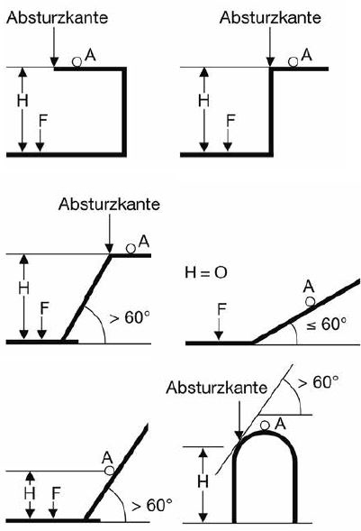
Abb. 3 "h" = senkrechter Höhenunterschied zwischen Arbeitsplatz "A" bzw. der Absturzkante und der Auftreffstelle "F"
Berücksichtigen Sie bei der Festlegung Ihrer Maßnahmen die Beschaffenheit der tiefer gelegenen Fläche, wie z. B. Flüssigkeiten (Ertrinken, Verätzen), Schüttgüter (Versinken), Beton oder Treppen (harter Aufschlag), Bewehrungsanschlüsse sowie Gegenstände und Maschinen. Daher kann es notwendig sein, bereits bei sehr geringen Höhen Schutzmaßnahmen gegen Absturz zu ergreifen. Insbesondere bei Arbeitsplätzen oder Verkehrswegen an oder über Wasser oder anderen festen oder flüssigen Stoffen, in denen man versinken kann, sind bereits ab 0 m Höhe Maßnahmen gegen Absturz erforderlich.
 Nähere Informationen sind in der ArbStättV in Verbindung mit der ASR A2.1 und der ASR A1.8 zu finden. Nähere Informationen sind in der ArbStättV in Verbindung mit der ASR A2.1 und der ASR A1.8 zu finden.
Maßnahmenhierarchie (siehe auch Abb. 4)
- Setzen Sie vorrangig Absturzsicherungen ein.
Dies sind bauliche und technische Maßnahmen gegen Absturz, wie z. B. dreiteiliger Seitenschutz.
- Nur wenn sich aus betriebstechnischen Gründen (z. B. Arbeitsverfahren, zwingende technische Gründe) Absturzsicherungen nicht verwenden lassen, müssen an deren Stelle Auffangeinrichtungen z. B. Fanggerüste, Fangnetze, vorhanden sein.
- Nur wenn sich keine Absturzsicherungen oder Auffangeinrichtungen einrichten lassen, sind Persönliche Schutzausrüstungen gegen Absturz (PSAgA) als individuelle Schutzmaßnahme zu verwenden.
 Voraussetzung für die Verwendung von PSAgA ist das Vorhandensein von Anschlageinrichtungen bzw. Anschlagmöglichkeiten. Diese müssen geeignet und ausreichend bemessen sein. Der oder die weisungsbefugte und sachkundige Vorgesetzte legt die geeignete Anschlageinrichtung im Einzelfall fest. Der oder die Vorgesetzte hat dafür zu sorgen, dass die PSAgA bestimmungsgemäß benutzt wird. Voraussetzung für die Verwendung von PSAgA ist das Vorhandensein von Anschlageinrichtungen bzw. Anschlagmöglichkeiten. Diese müssen geeignet und ausreichend bemessen sein. Der oder die weisungsbefugte und sachkundige Vorgesetzte legt die geeignete Anschlageinrichtung im Einzelfall fest. Der oder die Vorgesetzte hat dafür zu sorgen, dass die PSAgA bestimmungsgemäß benutzt wird.
 Die Beschäftigten müssen in der Benutzung der PSAgA und über die Durchführung der erforderlichen Rettungsmaßnahmen unterwiesen werden. Hierzu gehört auch eine praktische Übung der Anwendung der PSAgA. Die geeignete PSAgA muss sich aus der Gefährdungsbeurteilung ergeben. Die Beschäftigten müssen in der Benutzung der PSAgA und über die Durchführung der erforderlichen Rettungsmaßnahmen unterwiesen werden. Hierzu gehört auch eine praktische Übung der Anwendung der PSAgA. Die geeignete PSAgA muss sich aus der Gefährdungsbeurteilung ergeben.
Lassen die Eigenart und der Fortgang der Tätigkeit und Besonderheiten des Arbeitsplatzes die vorgenannten Schutzmaßnahmen nicht zu, darf auf die Anwendung von PSAgA im Einzelfall nur dann verzichtet werden, wenn:
- die Arbeiten von fachlich qualifizierten und körperlich geeigneten Beschäftigten ausgeführt werden,
- der Arbeitgeber für den begründeten Ausnahmefall eine besondere Unterweisung durchgeführt hat und die Absturzkante für die Beschäftigten deutlich erkennbar ist.
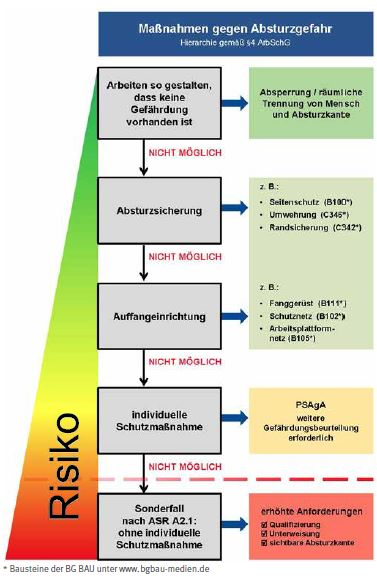
Abb. 4 Maßnahmen gegen Gefährdungen durch Absturz gemäß Arbeitsschutzgesetz
Arbeiten am Wasser
Besteht bei Arbeiten am, auf oder über dem Wasser die Gefahr des Ertrinkens, z. B., in Bereichen, in denen keine Absturzsicherungen vorhanden sind, müssen Rettungsmittel in ausreichender Zahl einsatzbereit zur Verfügung stehen und benutzt werden. Den Beschäftigten müssen Rettungswesten zur Verfügung stehen und von ihnen angelegt werden.
 Siehe z. B. DIN EN ISO 12402-2 "Persönliche Auftriebsmittel, Teil 2 Rettungswesten, Stufe 275, Sicherheitstechnische Anforderungen" oder DIN EN ISO 12402-3 "Persönliche Auftriebsmittel, Teil 3 Rettungswesten, Stufe 150, Sicherheitstechnische Anforderungen". Siehe z. B. DIN EN ISO 12402-2 "Persönliche Auftriebsmittel, Teil 2 Rettungswesten, Stufe 275, Sicherheitstechnische Anforderungen" oder DIN EN ISO 12402-3 "Persönliche Auftriebsmittel, Teil 3 Rettungswesten, Stufe 150, Sicherheitstechnische Anforderungen".
3.1.2 Arbeitsplätze und Verkehrswege
Arbeitsplätze müssen über sicher begehbare Verkehrswege zu erreichen sein. Sorgen Sie dafür, dass Arbeitsplätze und Verkehrswege stand- und trittsicher, gegen Absturz von Personen gesichert sowie ausreichend beleuchtet sind. Sorgen Sie für geeignete Verkehrsregeln zur Nutzung der Fahr- und Fußwege im Baustellenbereich.
|
Gefährdungen
|
|
Auf Arbeitsplätzen und Verkehrswegen bestehen unter anderem Gefährdungen durch:
- nicht ausreichend tragfähige und standsichere Arbeitsplätze und Verkehrswege
- Abstürzen
- Angefahren/Überfahren werden
- Eingequetscht werden
- schlechte Beleuchtung
- Stolpern, Rutschen, Stürzen
- Ertrinken
|
|
Maßnahmen
|
|
Allgemeine Anforderungen
Für Bauarbeiten müssen Arbeitsplätze so eingerichtet und beschaffen sein, dass sie entsprechend
- der Art der baulichen Anlage,
- den wechselnden Bauzuständen,
- den Witterungsverhältnissen und
- den jeweils auszuführenden Arbeiten
ein sicheres Arbeiten gewährleisten. Arbeitsplätze und Verkehrswege müssen sicher begehbar sein.
Tragfähigkeit und Standsicherheit
Arbeitsplätze, Verkehrswege und ihre Umgebung (z. B. Bauliche Anlagen und ihre Teile, Hilfskonstruktionen, Gerüste, Laufstege, Baugruben, Maschinen, Geräte und andere Einrichtungen) müssen standsicher und ausreichend tragfähig sein. Sie dürfen nicht überlastet werden und müssen auch während der einzelnen Bauzustände standsicher sein.
Mindestabmessungen
Die freie unverstellte Fläche am Arbeitsplatz muss so bemessen sein, dass sich die Beschäftigten bei ihrer Tätigkeit ungehindert bewegen können. Verkehrswege müssen ständig freigehalten werden, damit sie jederzeit benutzt werden können. Die Mindestbreite von Laufstegen auf Baustellen muss 50 cm betragen. Sie müssen Trittleisten haben, wenn sie steiler als 1:5 (etwa 11°) sind; sie müssen Stufen haben, wenn sie steiler als 1:1,75 (etwa 30°) sind. Die lichte Mindesthöhe über Verkehrswegen sollte möglichst 2,00 m betragen.
Zugänge zu höher gelegenen Arbeitsplätzen
Aufstiege zu Arbeitsplätzen müssen als Treppen oder Laufstege ausgeführt sein.
Ergibt sich aus der Gefährdungsbeurteilung, dass die Benutzung/Verwendung von sicheren Arbeitsmitteln wie beispielweise Treppen wegen der geringen Gefährdung und der geringen Dauer und Häufigkeit der Verwendung und der nicht änderbaren vorhandenen baulichen Gegebenheiten nicht gerechtfertigt ist, dürfen Leitern eingesetzt werden.
Dies kann der Fall sein, wenn
- der zu überbrückende Höhenunterschied nicht mehr als 5,00 m beträgt und
- der Aufstieg nur für kurzzeitige Bauarbeiten benötigt wird oder
- sich die Arbeitsplätze in Schächten befinden und der Einbau einer Treppe aus bau- oder arbeitstechnischen Gründen nicht möglich ist.

Abb. 5 Treppe als Zugang zur Baugrube
Die Gefährdungsbeurteilung muss ergeben, dass die Verwendung einer Leiter sicher möglich ist.
Leitern müssen durch zusätzliche Maßnahmen gegen Umstoßen gesichert sein und mindestens 1,0 m über die Austrittsstelle hinausragen, sofern keine anderen geeigneten Festhaltemöglichkeiten vorhanden sind.
Anlegeleitern als Arbeitsplatz
In der Gefährdungsbeurteilung ist zu prüfen, ob für die vorgesehenen Tätigkeiten ein Arbeitsmittel verwendet werden kann, welches eine höhere Sicherheit als eine Leiter bietet. Die Verwendung von Leitern als hochgelegener Arbeitsplatz ist nur zulässig, wenn die Gefährdungsbeurteilung ergibt, dass kein anderes, sichereres Arbeitsmittel (z. B. Gerüste, Hubarbeitsbühnen, Falttreppen) verwendet werden kann und die Arbeiten sicher ausgeführt werden können, das heißt
- bis zu einer Standhöhe von 2 m
- bei einer Standhöhe zwischen 2 und 5 m, wenn nur zeitweilige Arbeiten ausgeführt werden, und
- wenn bei der Verwendung der Leiter die Person mit beiden Füßen auf einer Stufe oder Plattform steht.
Zeitweilige Arbeiten sind Arbeiten, die einen Zeitraum von 2 Stunden je Arbeitsschicht nicht überschreiten, wie z. B. Wartungs-, Instandhaltungs-, Inspektions-, Mess- und Montagearbeiten.

Abb. 6 Einsatz von Anlegeleitern als Verkehrsweg
Bei der Gefährdungsbeurteilung ist zu berücksichtigen, dass bei der Verwendung einer Leiter
- das Gewicht des mitzuführenden Werkzeuges und Materials 10 kg nicht überschreitet,
- keine Gegenstände mit einer Windangriffsfläche über 1 m2 mitgeführt werden,
- keine Stoffe oder Geräte benutzt werden, von denen für die Beschäftigten zusätzliche Gefahren ausgehen,
- Arbeiten ausgeführt werden, die keinen größeren Kraftaufwand erfordern, als den, der zum Kippen der Leiter ausreicht.
Darüber hinaus sind folgende Punkte zu beachten:
- Arbeitsaufgabe bzw. Verwendung, z. B. einzusetzende Körperkraft, Schwierigkeit der Tätigkeit, Höhenunterschied, Ergonomie.
- Umgebungsbedingungen wie Untergrund, Aufstellort, Witterung.
- Standsicherheit, z. B. Gefährdung durch Umstoßen, Verrutschen.
- Einzusetzendes Zubehör der Leiter.
5 Punkte gegen Leiterunfälle
- Alternative zur Leiter prüfen
- Die richtige Leiter auswählen
- Leiterzubehör verwenden
- Leiternutzer bzw. Leiternutzerin unterweisen
- Leitern kontrollieren und prüfen
Beleuchtung
Wenn Arbeitsplätze und Verkehrswege nicht ausreichend durch Tageslicht ausgeleuchtet sind, müssen sie mit einer angemessenen Beleuchtung ausgestattet sein.
|
| Arbeitsbereiche, Arbeitsplätze, Tätigkeiten auf Baustellen |
lx |
| Allgemeine Beleuchtung, Verkehrswege |
20 |
| Grobe Tätigkeiten, z. B.: Erdarbeiten, Hilfs- und Lagerarbeiten, Transport, Verlegen von Entwässerungsrohren |
50 |
| Normale Tätigkeiten, z. B.:
Montage von Fertigteilen, einfache Bewehrungsarbeiten, Schalungsarbeiten, Stahlbeton- und Maurerarbeiten, Installationsarbeiten, Arbeiten im Tunnel |
100 |
| Feine Tätigkeiten, z. B.:
Anspruchsvolle Montagen, Oberflächenbearbeitung, Verbindung von Tragwerkselementen |
200 |
Tabelle 2 Mindestwerte der Beleuchtungsstärken auf Baustellen
3.1.3 Arbeitsplätze im Grenzbereich zum Straßenverkehr – Gefährdungsbeurteilung
Bei Bauarbeiten im Grenzbereich zum vorbeifließenden Straßenverkehr kommen zu den bauüblichen Gefährdungen die Gefährdungen durch den heran- und vorbeifahrenden Verkehr hinzu. Deshalb müssen Ihre Beschäftigten vor diesen Gefahren geschützt und gleichzeitig der Verkehr sicher an der Baustelle vorbeigeführt werden. Schutzmaßnahmen müssen bereits in der Planungsphase berücksichtigt werden.

Abb. 7 Arbeiten im Schutze einer Vollsperrung
|
Weitere Informationen
|
- Richtlinien für die verkehrsrechtliche Sicherung von Arbeitsstellen an Straßen (RSA) 21
- Zusätzliche Technische Vertragsbedingungen und Richtlinien für Sicherungsarbeiten an Arbeitsstellen an Straßen (ZTV-SA) 97
- Allgemeine Rundschreiben Straßenbau (ARS)
- Handlungshilfe für das Zusammenwirken von ASR A5.2 und RSA bei der Planung von Straßenbaustellen im Grenzbereich zum Straßenverkehr
|
|
Gefährdungen
|
|
Bei Bauarbeiten im Grenzbereich zum vorbeifließenden Straßenverkehr bestehen u. a. folgende Gefährdungen:
- Anfahren, Überfahren
- Windsog durch vorbeifahrende Fahrzeuge, insbesondere Lkw
- Getroffen werden von weggeschleuderten Teilen, z. B. Leitbaken, Fahrzeugteilen
- Stolpern, Stürzen
- Abgase
- Staub
- Lärm
- Psychische Belastung
- Physische Belastung, z. B. durch Zwangshaltung
|
|
Maßnahmen
|
|
Nachfolgende Maßnahmen sind zum Teil durch Sie als Unternehmerin oder Unternehmer nur umsetzbar, wenn diese bereits bauherrnseitig beim Entwurf berücksichtigt worden sind, wie z. B. geeignete Verkehrsführung oder -sperrung, geeignete Schutz- und Verkehrseinrichtungen, ausreichende Dimensionierung des Baufeldes für die eingesetzten Arbeitsverfahren, Sicherheitsabstände zum Verkehrsbereich und erforderliche Bewegungsflächen für Beschäftigte.
Berücksichtigen Sie die in der Planungsphase von der Bauherrin oder dem Bauherrn gegebenen Hinweise. Beachten Sie hierzu die weiteren Regelungen im Kapitel 2, Abschnitte "Was zusätzlich für die Branche gilt".
| |
 |
Siehe hierzu auch ATV DIN 18329 "Verkehrssicherungsarbeiten". |
Beachten Sie des Weiteren auch die Regelungen in den Abschnitten
- "Arbeitsplätze im Grenzbereich zum Straßenverkehr – Verkehrssicherung",
- "Arbeitsplätze im Grenzbereich zum Straßenverkehr – Sicherheitsabstände und Platzbedarf".
Vor dem Beginn von Arbeiten, die sich auf den öffentlichen Straßenverkehr auswirken, ist eine verkehrsrechtliche Anordnung gemäß StVO einzuholen.
Alle Verkehrssicherungsmaßnahmen sind mit der zuständigen Behörde, z. B. der Straßenverkehrsbehörde, abzustimmen.
Gefährdungsbeurteilung und Maßnahmenhierarchie in Bezug auf Sicherheit und Gesundheitsschutz
Ermitteln Sie als Unternehmer oder Unternehmerin im Rahmen der Gefährdungsbeurteilung, ob Beschäftigte beim Einrichten und Betreiben der Baustelle Gefährdungen aus dem Straßenverkehr ausgesetzt sein können. Legen Sie anschließend die erforderlichen Schutzmaßnahmen fest. Hierbei ist zu berücksichtigen, dass Baustellen so geplant, eingerichtet und betrieben werden, dass Gefährdungen durch den fließenden Verkehr für Beschäftigte möglichst vermieden und verbleibende Gefährdungen möglichst geringgehalten werden.
Umleitungen
Gefährdungen durch den fließenden Verkehr können z. B. vermieden werden durch eine vollständige Umleitung des Verkehrs bei einbahnigen Straßen oder eine Überleitung des Verkehrs auf die Gegenfahrbahn bei zweibahnigen Straßen.
Fahrzeugrückhaltesysteme/Transportable Schutzeinrichtungen
Sofern Gefährdungen für Beschäftigte durch den fließenden Verkehr nicht vermieden werden können, sind diese so weit wie möglich zu minimieren.
Sind Arbeitsplätze einschließlich Verkehrswege nicht bereits durch baulich vorhandene Fahrzeugrückhaltesysteme (z. B. im Mittelstreifen) vom fließenden Verkehr getrennt, sind zur Minimierung der Gefährdungen durch ein Abkommen von Fahrzeugen bei einer zulässigen Höchstgeschwindigkeit > 50 km/h zur räumlichen Trennung von Arbeitsplätzen und Verkehrswegen auf Straßenbaustellen vom vorbeifließenden Verkehr grundsätzlich transportable Schutzeinrichtungen einzusetzen. Dabei ist die Mindestaufstelllänge und der Wirkungsbereich der transportablen Schutzeinrichtungen zu beachten.
Bis zu 50 km/h sollen transportable Schutzeinrichtungen eingesetzt werden
- entlang von Baugruben oder Gräben, wenn eine Absturz- bzw. Einsturzgefahr besteht (z. B. bei dicht an Aufgrabungskanten vorbeigeführten Fahrstreifen),
- wenn auf Grund der Verkehrsführung (z. B. starke Verschwenkungen, enge Fahrstreifen) eine erhöhte Abkommenswahrscheinlichkeit für den fließenden Verkehr besteht, hierdurch Beschäftigte gefährdet werden können und die erhöhte Abkommenswahrscheinlichkeit nicht durch eine Geschwindigkeitsreduzierung minimiert werden kann.
Andere Maßnahmen, z. B. ein Baugrubenverbau, können angewendet werden, wenn sie für das beabsichtigte Aufhalten oder Umlenken von Fahrzeugen dimensioniert und ausgebildet sind. Bei der Auswahl der Transportablen Schutzeinrichtungen sind Geschwindigkeit, Gewicht sowie Anfahrwinkel der Fahrzeuge zu berücksichtigen und die im Abschnitt "Arbeitsplätze im Grenzbereich zum Straßenverkehr – Sicherheitsabstände und Platzbedarf" genannten Sicherheitsabstände anzuwenden.
| |
|
Siehe Aufhaltestufen und Wirkungsbereiche entsprechend Liste "Transportabler Schutzeinrichtungen" (TSE) der Bundesanstalt für Straßenwesen (BASt). |
Verkehrseinrichtungen
Können Transportable Schutzeinrichtungen nicht eingesetzt werden, z. B.
- aufgrund fehlender Aufstellflächen oder Unterschreitung der Mindestaufbaulänge,
- wegen Behinderung des Baustellenverkehrs (z. B. Anlieferung von Material, Baumaschinen), oder ist der Einsatz Transportabler Schutzeinrichtungen nicht verhältnismäßig, z. B.
| –
| wenn die Gefährdung der Beschäftigten beim Auf- und Abbau der Schutzeinrichtung größer ist als ihre Gefährdung bei der eigentlichen Arbeit im Grenzbereich zum Straßenverkehr,
|
- weil nur einzelne, zeitlich begrenzte Bauphasen größere Arbeitsbreiten erfordern und eine durchgängige, gleichbleibend starke Einschränkung oder eine Vollsperrung für zeitlich begrenzte Bauphasen des Verkehrs nicht erforderlich ist,
sind Verkehrseinrichtungen (z. B. Leitbaken, Leitkegel), Leitschwellen, -borde oder -wände zur Führung des Straßenverkehrs zu verwenden.
| |
|
Transportable Schutzeinrichtungen bieten oft auch bei Unterschreitung der Mindestaufbaulänge einen besseren Schutz als z. B. Leitbaken. |
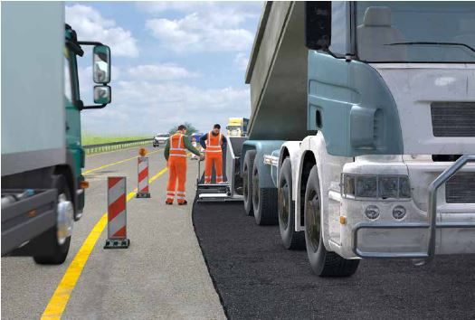
Abb. 8 Absicherung durch Leitbaken
|
3.1.4 Arbeitsplätze im Grenzbereich zum Straßenverkehr – Verkehrssicherung
Bei Bauarbeiten im Grenzbereich zum vorbeifließenden Straßenverkehr können sowohl Ihre Beschäftigten als auch Verkehrsteilnehmende gefährdet werden. Deshalb müssen bei diesen Tätigkeiten sowohl Arbeitsschutz als auch die Verkehrssicherheit berücksichtigt werden.
Abb. 9 Warnkleidung Klasse 3 bei erhöhter Gefährdung
|
Weitere Informationen
|
- Richtlinien für die verkehrsrechtliche Sicherung von Arbeitsstellen an Straßen (RSA) 21
- Zusätzliche Technische Vertragsbedingungen und Richtlinien für Sicherungsarbeiten an Arbeitsstellen an Straßen (ZTV-SA) 97
- Allgemeine Rundschreiben Straßenbau (ARS)
- Handlungshilfe für das Zusammenwirken von ASR A5.2 und RSA bei der Planung von Straßenbaustellen im Grenzbereich zum Straßenverkehr der Bundesanstalt für Straßenwesen
- DGUV Information 206-016 "Psychische Belastungen im Straßenbetrieb und Straßenunterhalt"
|
|
Gefährdungen
|
|
Bei Bauarbeiten im Grenzbereich zum vorbeifließenden Straßenverkehr bestehen u. a. folgende Gefährdungen:
- Angefahren werden, überfahren werden
- Windsog durch vorbeifahrende Fahrzeuge, insbesondere Lkw
- Getroffen werden von weggeschleuderten Teilen der Verkehrseinrichtung, z. B. Leitbaken, Bakenfüße
- Stolpern, Stürzen
- Abgase
- Staub
- Lärm
- Psychische Belastung
- Physische Belastung, z. B. durch Zwangshaltung
|
|
Maßnahmen
|
|
Berücksichtigen Sie die in der Planungsphase von der Bauherrin bzw. dem Bauherrn gegebenen Hinweise. Beachten Sie hierzu die weiteren Regelungen Regelungen in Kapitel 2, Abschnitte "Was zusätzlich für die Branche Tiefbau gilt".
| |
|
Siehe hierzu auch ATV DIN 18329 "Verkehrssicherungsarbeiten". |
Beachten Sie des Weiteren auch die Regelungen in den Kapiteln
- "Arbeitsplätze im Grenzbereich zum Straßenverkehr – Gefährdungsbeurteilung" und
- "Arbeitsplätze im Grenzbereich zum Straßenverkehr – Sicherheitsabstände und Platzbedarf".
Straßenverkehrsrechtliche Vorgaben
Die Verkehrssicherung erfolgt nach der Straßenverkehrsordnung (StVO) in Verbindung mit den Richtlinien für die Sicherung von Arbeitsstellen an Straßen (RSA) 95. Diese betreffen ausschließlich verkehrsrechtliche Regelungen und ausdrücklich nicht den Schutz der Beschäftigten.
Verkehrsrechtliche Anordnung
Holen Sie als Unternehmerin oder Unternehmer vor Beginn von Arbeiten, die sich auf den öffentlichen Straßenverkehr auswirken, eine verkehrsrechtliche Anordnung über Art und Umfang der Verkehrssicherung bei der zuständigen Behörde ein. Legen Sie bei der Beantragung der Anordnung einen Verkehrszeichenplan vor, der insbesondere
- die tatsächlichen örtlichen Verhältnisse und die für das Bauverfahren erforderlichen Platzverhältnisse,
- die erforderlichen Sicherheitsabstände zwischen Verkehrsbereich und Arbeitsplätzen,
- die eingesetzten Arbeitsmaschinen und Arbeitseinrichtungen
berücksichtigt.
Alle Verkehrssicherungsmaßnahmen sind mit der zuständigen Behörde abzustimmen.
Verkehrszeichenplan/Regelplan
Gemäß § 45 Abs. 6 StVO ist ein Verkehrszeichenplan erforderlich. Sollen Regelpläne eingesetzt werden, ist Folgendes zu beachten:
- Bei den in den RSA 21 dargestellten Regelplänen handelt es sich um für Standardsituationen typisierte Musterpläne.
- Ihre Eignung und das Erfordernis jedes Anordnungselements sind für die jeweilige örtliche und verkehrliche Situation unter Zugrundelegung strenger Maßstäbe zu prüfen.
- Sind Änderungen aufgrund örtlicher Besonderheiten erforderlich, so dient der Regelplan als Grundbaustein für den Verkehrszeichenplan. Der Plan ist ggf. zu ergänzen oder zu ändern.
Der Verkehrszeichenplan muss von der zuständigen Behörde angeordnet werden und ist Bestandteil der verkehrsrechtlichen Anordnung. Weitere wichtige
Angaben in der verkehrsrechtlichen Anordnung sind z. B.
- ggf. Beschreibung einzelner Arbeitstakte bzw. Bauphasen,
- tatsächlich vorhandene Restbreiten von eingeschränkten Fahrbahnteilen,
- Gültigkeitsdauer der Anordnung (Beginn und Ende),
- Lage,
- Geschwindigkeitsbeschränkungen,
- Name, Anschrift und Telefon der Verantwortlichen/Stellvertretungen während und nach der Arbeitszeit.
Die verkehrsrechtliche Anordnung und der angeordnete Verkehrszeichenplan/Regelplan müssen auf der Baustelle vorliegen. Ein Arbeiten ohne verkehrsrechtliche Anordnung ist nicht zulässig (Ausnahme: Sonderrechte nach StVO § 35 (6 und 8)). Von der verkehrsrechtlichen Anordnung darf nicht abgewichen werden.
Kontrolle und Wartung
Kontrolle und Wartung erfolgen nach Erfordernis im Einzelfall. Bei Arbeitsstellen längerer Dauer im Zuständigkeitsbereich des Bundesfernstraßenbaus sollte
- zweimal täglich,
- an arbeitsfreien Tagen einmal täglich kontrolliert werden.
 Beachten Sie mögliche Dokumentationspflichten! Beachten Sie mögliche Dokumentationspflichten!
Der oder die in der verkehrsrechtlichen Anordnung benannte Verantwortliche kann andere Personen mit der Kontrolle und Wartung beauftragen, bleibt aber verantwortlich.
Auch für erforderliche Änderungen von Verkehrssicherungsmaßnahmen muss eine verkehrsrechtliche Anordnung gemäß StVO vorliegen.
Zur Aufrechterhaltung der Sicherheit und Ordnung des öffentlichen Straßenverkehrs kann gemäß StVO die Polizei bei Gefahr im Verzug vorläufige Maßnahmen treffen.
Im Zuständigkeitsbereich des Bundesfernstraßenbaus muss der in der verkehrsrechtlichen Anordnung benannte Verantwortliche entsprechend MVAS geschult sein.
Auswahl von Warnkleidung für den Straßenverkehr
Nach den gültigen Rechtsvorschriften ist bei Tätigkeiten im Straßenverkehr Warnkleidung zu tragen.
Zur Auswahl der Warnkleidung ist im Rahmen der Gefährdungsbeurteilung die Erkennbarkeit der Warnkleidung unter Berücksichtigung der auszuführenden Tätigkeiten, Körperhaltungen und Umgebungsbedingungen zu bewerten.
Bei Arbeiten im öffentlichen Straßenverkehr sind bei der Auswahl von Warnkleidung die Anforderungen der StVO, der Allgemeinen Verwaltungsvorschrift zur Straßenverkehrs-Ordnung (VwV-StVO) und der RSA zu berücksichtigen.
Es ist mindestens Warnkleidung der Klasse 2 erforderlich. Diese darf eingesetzt werden, wenn eine einfache Gefährdung im Straßenverkehr vorliegt. Einfache Gefährdung bedeutet:
- ausreichende Sichtverhältnisse und
- geringe Verkehrsbelastung von weniger als 600 Fahrzeugen pro Stunde und
- durchschnittliche Verkehrsgeschwindigkeit von unter 60 km/h
oder
- wenn Arbeiten innerhalb einer nach den Richtlinien für die Sicherung von Arbeitsstellen an Straßen (RSA) gesicherten Baustelle durchgeführt werden.
Bei erhöhter Gefährdung ist Warnkleidung der Klasse 3 erforderlich.
|
3.1.5 Arbeitsplätze im Grenzbereich zum Straßenverkehr – Sicherheitsabstände und Platzbedarf
Um Ihre Beschäftigten vor den Gefahren aus dem ankommenden und vorbeifließenden Verkehr zu schützen, sind zwischen Arbeitsplätzen und dem vorbeifließenden Verkehr Sicherheitsabstände einzuhalten. Für die Arbeitsplätze neben dem fließenden Verkehr muss eine freie, unverstellte Bewegungsfläche zur Verfügung stehen.

Abb. 10 Sicherheitsabstand und freie, unverstellte Bewegungsfläche nach ArbStättV
|
Weitere Informationen
|
- DGUV Information 212-016 "Warnkleidung"
- DGUV Information 206-016 "Psychische Belastungen im Straßenbetrieb und Straßenunterhalt"
- Handlungshilfe für das Zusammenwirken von ASR A5.2 und RSA bei der Planung von Straßenbaustellen im Grenzbereich zum Straßenverkehr
- Richtlinien für die Sicherung von Arbeitsstätten an Straßen (RSA)
- Zusätzliche Technische Vertragsbedingungen und Richtlinien für Sicherungsarbeiten an Arbeitsstellen an Straßen (ZTV-SA)
- Allgemeine Rundschreiben Straßenbau (ARS)
|
|
Gefährdungen
|
|
- Angefahren werden, überfahren werden
- Windsog durch vorbeifahrende Fahrzeuge, insbesondere Lkw
- Getroffen werden von weggeschleuderten Teilen der Verkehrseinrichtung, z. B. Leitbaken, Bakenfüße
- Stolpern, Stürzen
- Abgase
- Staub
- Lärm
- Psychische Belastungen
- Physische Belastungen, z. B. durch Zwangshaltung
|
|
Maßnahmen
|
|
Berücksichtigen Sie die in der Planungsphase von der Bauherrin oder vom Bauherrn, gegebenen Hinweise. Beachten Sie hierzu die weiteren Regelungen in Kapitel 2, Abschnitte "Was zusätzlich für die Branche gilt".
Siehe hierzu auch ATV DIN 18329 "Verkehrssicherungsarbeiten".
Beachten Sie des Weiteren auch die Regelungen in den Kapiteln
- "Arbeitsplätze im Grenzbereich zum Straßenverkehr – Gefährdungsbeurteilung" und
- "Arbeitsplätze im Grenzbereich zum Straßenverkehr – Verkehrssicherung".
Hinweise: Vor dem Beginn von Arbeiten, die sich auf den öffentlichen Straßenverkehr auswirken, ist eine verkehrsrechtliche Anordnung gemäß StVO einzuholen.
Alle Verkehrssicherungsmaßnahmen sind mit der zuständigen Behörde abzustimmen.
Ermittlung der erforderlichen Platzbedarfe, Allgemeines
Ermitteln Sie im Rahmen der Gefährdungsbeurteilung die erforderlichen Platzbedarfe für Arbeitsplätze, Verkehrswege, Sicherheitsabstände und technische Schutzmaßnahmen. Diese Platzbedarfe sind abhängig von den auszuführenden Tätigkeiten und von den eingesetzten Arbeitsmitteln.
Dabei sind Platzbedarfe z. B. für
- freie Bewegungsflächen für Beschäftigte unter Berücksichtigung der Körpermaße und der auszuführenden Bewegungsabläufe,
- ein durch Arbeitsverfahren bedingtes Hinauslehnen aus Führer- und Bedienständen von Fahrzeugen und Maschinen zur Einsichtnahme in den Fahr- und Arbeitsbereich,
- das Steuern oder Bedienen von Maschinen im Mitgängerbetrieb,
- Arbeits- und Schwenkbereiche von Arbeitsmitteln,
- Aufstell- und Lagerflächen für die eingesetzten Arbeitsmittel und Materialien,
- Baustellenein- und -ausfahrten,
- Zufahrten für Rettungsdienste,
- Fahrzeug-Rückhaltesysteme und Verkehrseinrichtungen (Leitbaken, Aufstellvorrichtungen, Absperrschranken und -zäune),
- Sicherheitsabstände für die Standsicherheit von Baugruben und Gräben
zu berücksichtigen. Richten Sie die Baustelle unter Berücksichtigung der so ermittelten Platzbedarfe ein.
Platzbedarf für die freie Bewegungsfläche von Personen
Unter Berücksichtigung von Ausgleichsbewegungen hat eine aufrechtstehende bzw. langsam gehende Person einen Mindestplatzbedarf von 80 cm. Hieraus ergeben sich folgende Mindestbreiten (BM) neben dem fließenden Verkehr:
- für Verkehrswege und Laufstege neben dem fließenden Verkehr: BM = 80 cm,
- für reine Kontroll-, Steuer- und Bedientätigkeiten neben dem fließenden Verkehr, z. B. im Mitgängerbetrieb: BM = 80 cm und
- für ein durch Arbeitsverfahren bedingtes Hinauslehnen aus Führer- und Bedienständen von Fahrzeugen und Maschinen zur Einsichtnahme in den Fahr- und Arbeitsbereich neben dem fließenden Verkehr: BM = 40 cm.
Für manuelle Tätigkeiten sind die erforderlichen Mindestbreiten BM im Rahmen der Gefährdungsbeurteilung zu ermitteln. Dabei darf die Mindestbreite BM 80 cm nicht unterschritten werden.
Bei der Ermittlung der Körpermaße kann man sich anthropometrischer Normen bedienen oder die Tätigkeit vorab simulieren und messen, wieviel Platz für die freie Bewegungsfläche erforderlich ist.
Beim Einsatz von Maschinen, bei denen der Bediener oder die Bedienerin bzw. der Fahrer oder die Fahrerin durch die Konstruktion des Herstellers ganz oder teilweise innerhalb der Maschinenaußenkonturen so verbleibt, dass keine bzw. eine verringerte exponierte Lage des Bedieners oder der Bedienerin bzw. des Fahrers oder der Fahrerin zum vorbeifließenden Verkehr entsteht, ist zusätzlich zur Festlegung von SQ nur noch der BM-Anteil zu berücksichtigen, der über die Maschinenaußenkonturen hinausragt und vom vorbeifließenden Verkehr gefährdet werden kann.
Sicherheitsabstände zum fließenden Verkehr
Zum Schutz der Beschäftigten sind für Arbeitsplätze
und Verkehrswege auf Straßenbaustellen
- ein seitlicher Sicherheitsabstand (SQ) zum fließenden Verkehr und
- ein Sicherheitsabstand in Längsrichtung (SL) zum ankommenden Verkehr
vorzusehen. Die Sicherheitsabstände SQ und SL zum fließenden Verkehr sind im Rahmen der Gefährdungsbeurteilung festzulegen.
Dabei sind z. B. folgende Kriterien zu berücksichtigen:
- Zulässige Höchstgeschwindigkeit des fließenden Verkehrs
- Fahrzeugarten des vorbeifließenden Verkehrs
- Kurvigkeit der Straßenführung
- fehlende Ausweichmöglichkeiten, z. B. durch Bordsteine, seitlichen Bewuchs oder Gegenverkehr
- Fahrstreifenbreiten
- Verkehrsdichte, Sichtverhältnisse
- Art, Abmessungen und Masse der Schutzeinrichtung (z. B. des Sicherungsfahrzeuges)
- unbeabsichtigte Bewegungen von Beschäftigten
- unbeabsichtigte Fahrbewegungen des fließenden Verkehrs
- Aufbautoleranzen von Verkehrseinrichtungen und Fahrzeugrückhaltesystemen
Im Bereich des Sicherheitsabstands dürfen sich außer zum Auf- und Abbau der Verkehrseinrichtungen keine Arbeitsplätze oder Verkehrswege befinden.

Abb. 11 Bezugslinie für seitliche Sicherheitsabstände (SQ) zum fließenden Verkehr:
a) dem Verkehr zugewandte äußere Begrenzung bei Fahrzeug-Rückhaltesystemen
b) Mittelachse bei Leitbaken, Leitkegeln, Leitwänden, Leitschwellen, Leitborden (ASR A5.2)
Seitlicher Sicherheitsabstand (SQ) von Arbeitsplätzen und Verkehrswegen auf Straßenbaustellen zum fließenden Verkehr
Die in den Tabellen dargestellten Sicherheitsabstände minimieren die Gefährdungen durch den vorbeifließenden Verkehr. Die seitlichen Sicherheitsabstände (SQ) werden bei Fahrzeug-Rückhaltesystemen auf die dem Verkehr zugewandte äußere Begrenzung des Fahrzeug-Rückhaltesystems bezogen (siehe Abb. 11a). Die seitlichen Sicherheitsabstände (SQ) werden bei Leitbaken, Leitkegeln, Leitwänden, Leitschwellen und Leitborden jeweils auf deren Mittelachse bezogen (siehe Abb. 11b). Aufgrund ihrer unterschiedlichen Abmessungen werden diesen Elementen spezifische Sicherheitsabstände zugeordnet. Können die Mindestmaße aus den Tabellen 3 und 4 nicht eingehalten werden, sind als Ergebnis einer Gefährdungsbeurteilung Schutzmaßnahmen festzulegen, die mindestens die gleiche Sicherheit und den gleichen Gesundheitsschutz für die Beschäftigten erreichen.
Sicherheitsabstand in Längsrichtung (SL) von Arbeitsplätzen und Verkehrswegen auf Straßenbaustellen zum ankommenden Verkehr
Die in der Tabelle 5 dargestellten Sicherheitsabstände SL minimieren die Gefährdungen durch den ankommenden Verkehr im Sinne eines durch einen Anprall aufzehrbaren Bereiches. Sie sind als lichtes Maß zwischen Sicherungs- bzw. Zugfahrzeug und Arbeitsstelle definiert, d. h. als Nettomaß. Werden auf innerörtlichen Straßen bzw. auf Landstraßen andere Verkehrseinrichtungen (§ 43 StVO) oder bauliche Leitelemente zur Querabsperrung von Teilen der Fahrbahn eingesetzt, so beträgt SL gegenüber dem ankommenden Verkehr innerorts 10 m, außerorts entspricht SL der Länge des Verschwenkungsbereichs gemäß RSA.
|
| Zulässige Höchstgeschwindigkeit |
Element |
30 km/h |
40 km/h |
50 km/h |
60 km/h |
80 km/h |
100 km/h |
| Fahrzeug-Rückhaltesysteme |
30 cm |
40 cm |
50 cm |
60 cm |
80 cm |
100 cm |
Leitbake (1000 x 250 mm, 750 x 187,5 mm),
Leitkegel, Leitwand |
30 cm |
40 cm |
50 cm |
70 cm |
90 cm |
* |
Leitbake (500 x 125 mm),
Leitschwelle, Leitbord |
50 cm |
60 cm |
70 cm |
90 cm |
110 cm |
* |
* Hinweise zu Tabelle 3:
1. Bei zulässigen Höchstgeschwindigkeiten ab 100 km/h müssen Fahrzeug-Rückhaltesysteme eingesetzt werden.
2. Die Sicherheitsabstände für Fahrzeug-Rückhaltesysteme berücksichtigen ausschließlich die verkehrsleitende Funktion dieser Systeme.
Tabelle 3 Mindestmaße für seitliche Sicherheitsabstände (SQ) zum fließenden Verkehr bei Straßenbaustellen längerer Dauer
| Zulässige Höchstgeschwindigkeit |
Element |
30 km/h |
40 km/h |
50 km/h |
60 km/h |
80 km/h |
100 km/h |
120 km/h |
| Leitbake (1000 x 250 mm, 750 x 187,5 mm), Leitkegel, Leitwand |
30 cm |
40 cm |
50 cm |
70 cm |
90 cm |
110 cm |
130 |
| Leitbake (500 x 125 mm), Leitschwelle, Leitbord |
50 cm |
60 cm |
70 cm |
90 cm |
110 cm |
130 cm |
150 cm |
Tabelle 4 Mindestmaße für seitliche Sicherheitsabstände (SQ) zum fließenden Verkehr bei Straßenbaustellen kürzerer Dauer
| Lage der Arbeitsstelle, bzw. zulässige Höchstgeschwindigkeit außerhalb des Arbeitsstellenbereichs |
Element |
innerörtliche Straßen |
Einbahnige Landstraßen
und innerörtliche Straßen
mit V > 50 km/h |
Autobahnen, autobahnähnliche
Straßen und zweibahnige
Landstraßenb |
| Fahrbare Absperrtafel mit Zugfahrzeug oder Sicherungsfahrzeug ≥ 10 t zulässige Gesamtmasse |
3 m |
10 m |
75 mc |
| Fahrbare Absperrtafel mit Zugfahrzeug oder Sicherungsfahrzeug < 10 t bis ≥ 7,49 t zulässige Gesamtmasse |
5 m |
15 m |
100 mc |
| Fahrbare Absperrtafel mit Zugfahrzeug oder Sicherungsfahrzeug < 7,49 t zulässige Gesamtmasse |
7,5 m |
20 m |
nicht zulässig |
| Fahrbare Absperrtafel ohne Zugfahrzeug |
15 m |
40 m |
nicht zulässig |
Hinweise zu Tabelle 5: Hochgestelltes "a": Die genannten Sicherheitsabstände (SL) sind im Sinne eines durch einen Anprall aufzehrbaren
Bereiches als lichtes Maß zwischen Vorderkante der Absperrung (Sicherungs- bzw. Zugfahrzeug) und Arbeitsbereich zu
verstehen, d. h. als Nettomaß. Hochgestelltes "b": Auf Rampen (Verbindungsfahrbahnen in Knotenpunkten) können in Abhängigkeit
von der Lage der Baustelle in der Rampe, der Rampenlänge und den tatsächlich gefahrenen Geschwindigkeiten kleinere Abstände
in Betracht kommen, jedoch nicht unter 20 m. Hochgestelltes "c": Bei beweglichen Straßenbaustellen (Arbeitsstellen) kann der Abstand
auf 50 m reduziert werden.
Tabelle 5 Mindestmaße für Sicherheitsabstände in Längsrichtung (SL)a zum ankommenden Verkehr
3.1.6 Tätigkeiten mit Gefahrstoffen
Bei Tiefbauarbeiten können sich Ihre Beschäftigten durch den Einsatz von Gefahrstoffen oder durch Tätigkeiten, bei denen Stäube oder Abgase freigesetzt werden, gefährden. In der Gefährdungsbeurteilung ist das STOP-Prinzip (Substitution – technische – organisatorische – persönliche Maßnahmen in dieser Reihenfolge) zu berücksichtigen.
Abb. 12 Staubminimierung durch Nassschneiden
|
Weitere Informationen
|
- DGUV Information 213-012 "Gefahrgutbeförderung in PKW und in Kleintransportern"
- DGUV Information 213-720 "Einsatz von Straßenfräsen mit Absauganlagen – Fräsen von Asphaltbelägen"
- Spezielle Informationen zu Gefahrstoffen sind im Internet abrufbar bei den Gefahrstoff-Informationssystemen (z. B. WINGIS, GESTIS). Sicherheitsdatenblätter finden sich unter: ► www.GefKomm-Bau.de).
- Insbesondere in WINGIS finden Sie Informationen um Tätigkeiten mit Gefahrstoffen sicher zu gestalten, auch Betriebsanweisungen in vielen europäischen Sprachen.
|
|
Gefährdungen
|
|
Gefahrstoffe können über die Atemwege, die Haut oder durch Verschlucken in den menschlichen Körper gelangen. Bei räumlich beengten Verhältnissen treten die einatembaren Gefahrstoffe meist in erhöhten Konzentrationen auf.
Gefährdungen durch (mineralischen) Staub:
- Stäube durch Fahrbetrieb, Erdbewegung, Felsausbruch und Wind.
Gefährdungen durch Motoremissionen (Baumaschinen, Straßenverkehr):
- Abgase von Otto- und Dieselmotoren in geschlossenen oder teilweise geschlossenen Räumen.
Freisetzung von Gefahrstoffen bei der Bearbeitung von Materialien z. B.:
- Stäube beim Fräsen von Asphaltbelägen, durch den Austrag und das Einfräsen von Bindemitteln zur Bodenverbesserung, beim Schneiden von z. B. Steinzeug, Beton, PVC oder GFK, beim Bohren und Schleifen von z. B. Beton, Naturstein;
- Rauche und Gase beim Schweißen oder Brennschneiden von Stahl, beim thermischen Aufbringen und Entfernen von Umhüllungen;
- Asbeststäube beim Bearbeiten von Asbest-Zement-Rohren;
- Dämpfe, z. B. beim Verwenden von ungesättigten Polyesterharzen (UP-Harzen), lösemittelhaltigen Epoxidharzprodukten;
- Allergie auslösende Stoffe, z. B. beim Verwenden von Epoxidharzprodukten;
- reizende oder ätzende Stoffe, z. B. beim Verwenden von zementhaltigen Produkten.
|
|
Maßnahmen
|
|
Allgemeines
Prüfen Sie als Unternehmerin oder Unternehmer, ob Gefahrstoffe substituiert (ersetzt) werden können. Ist dies nicht möglich, sind technische Schutzmaßnahmen zu ergreifen, bevor organisatorische oder persönliche Schutzmaßnahmen in Betracht kommen (STOP-Prinzip).
Sorgen Sie durch die Einhaltung der Arbeitsplatzgrenzwerte (AGW) für den Gesundheitsschutz ihrer Beschäftigten.
Für Gefahrstoffe, für die kein AGW existiert, z. B. einige krebserzeugende Stoffe, müssen deren Konzentrationen unter Berücksichtigung des STOP-Prinzips und des Standes der Technik so weit wie möglich reduziert werden. Dabei sind die Technischen Regeln für Gefahrstoffe und die Beurteilungsmaßstäbe gem. GeffStoffV zu berücksichtigen.
Maßnahmen auf Baustellen gegen Gefährdungen durch Stäube können sein:
- Befestigte Fahrwege/Baustraßen erforderlichenfalls reinigen;
- Staubvermeidung durch Absaugung oder Befeuchtung;
- unbefestigte Fahrwege/Baustraßen erforderlichenfalls durch Wasserbenetzung, ggf. in Verbindung mit dem Einsatz von staubbindenden Produkten, feucht halten;
- Fahrerkabinen mit Belüftungs-/Klimaanlagen ausstatten und mit geschlossenen Türen und Fenstern betreiben.
Maßnahmen gegen Gefährdungen durch Abgase können sein:
- Verwendung alternativer Antriebe (Elektro-, Elektrohydraulisch),
- Abgasabsaugung direkt an der Entstehungsstelle,
- Einsatz von Dieselpartikelfiltern bzw. Katalysatoren beim Betrieb in geschlossenen oder teilweise geschlossenen Räumen,
- lüftungstechnische Maßnahmen.
Maßnahmen bei der Bearbeitung von Materialien können sein:
- Großfräsen ab 1 m Fräsbreite nur mit Absaugung einsetzen;
- Schneiden, Bohren und Schleifen von z. B. Steinzeug, Beton, Asphalt: nur Maschinen mit Wasserspülung oder Staubabsaugung einsetzen; Umlaufwasser mind. täglich wechseln;
- Schweißen oder Brennschneiden von z. B. Stahl an stationären Arbeitsplätzen unter Verwendung einer Absauganlage durchzuführen;
- Bei asbesthaltigen Materialien nur anerkannte emissionsarme Verfahren anwenden.
Maßnahmen bei der Verwendung von Chemikalien
- Lösemittelfreie und nicht sensibilisierende Produkte verwenden;
- Ausreichende Belüftung bei Arbeitsstellen mit unzureichendem Luftwechsel (z. B. im Rohrgraben oder in Schächten);
- Persönliche Schutzausrüstung gegen Hautkontakt mit Allergie auslösenden, reizenden oder ätzenden Stoffen, z. B. beim Verwenden von Epoxidharzprodukten oder zementhaltigen Produkten, (z. B. geeignete Handschuhe).
Betriebsanweisung
Erstellen Sie vor dem Beginn der Arbeiten eine Betriebsanweisung. WINGIS bietet Entwürfe für Betriebsanweisungen in vielen Sprachen.
Unterweisung
Vermitteln Sie im Rahmen der Unterweisung auf Basis der Betriebsanweisung die gesundheitsgefährdende Wirkung der Gefahrstoffe und die notwendigen Schutzmaßnahmen.
Persönliche Schutzausrüstungen (PSA)
Stellen Sie entsprechend der Betriebsanweisung die notwendigen persönlichen Schutzausrüstungen zur Verfügung. Die PSA muss von den Beschäftigten benutzt werden.
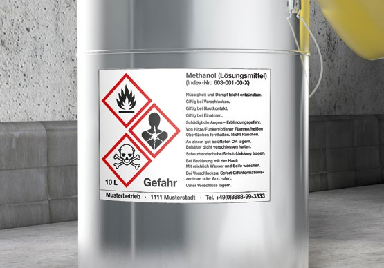
Abb. 13 Kennzeichnung von Gebinden mit Hinweisen auf Gefährdungen durch Gefahrstoffe
|
3.1.7 Tätigkeiten mit biologischen Arbeitsstoffen
Bei Arbeiten des Tiefbaus kann es durch Tätigkeiten mit Abwasser oder im Boden vorhandenen Stoffen zu Kontakten mit Mikroorganismen kommen. Diese können beim Menschen unter Umständen Infektionen, sensibilisierende oder toxische Wirkungen hervorrufen. Mit richtig ausgewählten Arbeitsverfahren und persönlichen Schutzausrüstungen verringern Sie diese Gefährdungen.
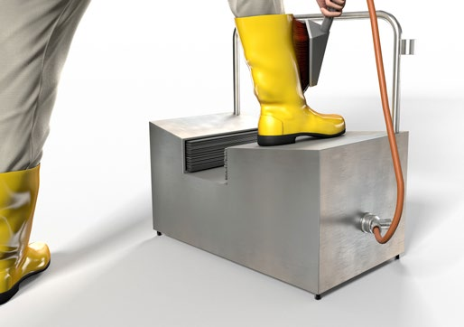
Abb. 14 Waschmöglichkeit für Stiefel
|
Weitere Informationen
|
- DGUV Information 201-005 "Handlungsanleitung zur Gefährdungsbeurteilung nach Biostoffverordnung (BioStoffV) – Tätigkeiten mit Boden sowie bei Grundwasser- und Bodensanierungsarbeiten"
- DGUV Information 201-032 "Handlungsanleitung Gefährdungsbeurteilung für biologische Arbeitsstoffe bei Arbeiten auf Deponien"
- DGUV Information 213-016 "Betriebsanweisungen nach der Biostoffverordnung"
|
|
Gefährdungen
|
|
Biologische Arbeitsstoffe (Biostoffe) werden anhand des von ihnen ausgehenden Infektionsrisikos in vier Gruppen mit aufsteigendem Risiko unterteilt:

Tabelle 6: Einstufung von Biostoffen in Risikogruppen
Infektionsgefahren
Biostoffe der Risikogruppen 1 und 2:
Diese sind in der Regel im Boden sowie in Grund- und Oberflächenwässern vorhanden. Biostoffe der Risikogruppe 2 können hinsichtlich ihres Gefährdungspotenzials sehr unterschiedlich sein. Die Risikogruppe 2 umfasst Mikroorganismen, die auch als normale Besiedler, z. B. auf der Haut oder im Darm des Menschen vorkommen, und nur unter besonderen Voraussetzungen zu Erkrankungen führen. Es werden aber auch Erreger eingeschlossen, die grundsätzlich Krankheiten verursachen können, gegen die jedoch wirksame Therapien oder Impfmöglichkeiten vorhanden sind, wie z. B. der Erreger des Wundstarrkrampfes. Böden und Wässer, die mit tierischen oder menschlichen Exkrementen verunreinigt sind, können Krankheitserreger beinhalten. Infektionserreger wie z. B. Hantaviren können auch durch Nagetiere (z. B. Ratten oder Mäuse) oder deren Ausscheidungen übertragen werden.
Biostoffe der Risikogruppe 3:
In Deutschland selten und nur lokal begrenzt an bestimmten Standorten im Boden.
Beispiele:
- Der Erreger des Milzbrandes, der unter Umständen im Bereich von Rohwarenlagern, Betriebsdeponien und Produktionsanlagen ehemaliger Standorte der Lederindustrie angetroffen werden kann.
- Bereiche, die stark mit Taubenkot verunreinigt sind, z. B. Brückenwiderlager.
- Abwasserkanalisation.
Biostoffe der Risikogruppe 4:
Diese kommen normalerweise in Deutschland nicht vor. Darunter sind Stoffe zu verstehen, die eine schwere Krankheit beim Menschen hervorrufen. Die Gefahr einer Verbreitung in der Bevölkerung ist unter Umständen groß. Normalerweise ist eine wirksame Vorbeugung oder Behandlung nicht möglich.
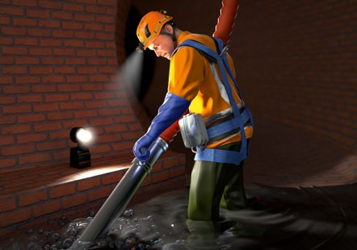
Abb. 15 Beispiel für Schutzkleidung und PSA bei Arbeiten in abwassertechnischen Anlagen
Allergisierende und toxische Wirkungen
Von unbelastetem Boden sind nach heutigem Kenntnisstand keine allergisierenden oder toxischen Wirkungen bekannt.
Aufnahmepfade/Infektionen
- Aufnahmepfade von biologischen Arbeitsstoffen:
- Einatmen
- Verschlucken
- Hautkontakt, schon bei kleinen Verletzungen (z. B. Kratzern)
Infektionen können z. B. herbeigeführt werden durch:
- direkten Kontakt mit belastetem Boden und Wasser,
- verunreinigte Geräte und Maschinen,
- fehlende bzw. ungenügende Hygiene,
- Bau-, Sanierungs- und Instandhaltungsarbeiten an und in abwassertechnischen Anlagen.
|
|
Maßnahmen
|
|
Legen Sie als Unternehmerin oder Unternehmer auf Basis der Gefährdungsbeurteilung die erforderlichen Schutzmaßnahmen fest.
Ihr Betriebsarzt bzw. Ihre Betriebsärztin berät Sie bei der Beurteilung der Arbeitsbedingungen und der Festlegung von Schutzmaßnahmen.
 Grundlage ist der Arbeits- und Sicherheitsplan (A+S Plan) des Auftraggebers bzw. der Auftraggeberin oder des Bauherrn bzw. der Bauherrin, der die zur Erstellung der Gefährdungsbeurteilung notwendigen Informationen zu enthalten hat. Grundlage ist der Arbeits- und Sicherheitsplan (A+S Plan) des Auftraggebers bzw. der Auftraggeberin oder des Bauherrn bzw. der Bauherrin, der die zur Erstellung der Gefährdungsbeurteilung notwendigen Informationen zu enthalten hat.
Vermeiden Sie Infektionsgefahren sowie allergisierende und toxische Wirkungen durch Maßnahmen, welche in Abhängigkeit der Gefährdungsbeurteilung ausgewählt werden.
Allgemeine Schutzmaßnahmen
Sorgen Sie mindestens für die Umsetzung der allgemeinen Schutzmaßnahmen nach § 9 der BiostoffV:
Beispiele für technische und bauliche Maßnahmen:
- Leicht zu reinigende Oberflächen für Fußböden und Arbeitsmittel (z. B. Maschinen, Betriebseinrichtungen) im Arbeitsbereich;
- Maßnahmen zur Vermeidung/Reduktion von Aerosolen, Stäuben und Nebeln;
- Waschgelegenheiten mit fließendem Wasser;
- Vom Arbeitsplatz getrennte Umkleidemöglichkeiten.
Beispiele für organisatorische Maßnahmen:
- Vor Beginn der Arbeiten die zu bearbeitenden Bereiche (z. B. Abwasserschächte) reinigen.
- Verschmutzte Arbeitsgeräte und Ausrüstungsgegenstände unmittelbar nach den Tätigkeiten reinigen.
- Arbeitsräume regelmäßig und bei Bedarf reinigen lassen.
- Mit biologischen Arbeitsstoffen belastete Abfälle in geeigneten Behältnissen sammeln.
- Waschmöglichkeiten zur Verfügung stellen.
- Mittel zur Reinigung, Trocknung, Schutz und Pflege für die Haut zur Verfügung stellen.
- Arbeitskleidung und persönliche Schutzausrüstung regelmäßig und bei Bedarf reinigen oder wechseln lassen.
- Getrennte Aufbewahrung von Arbeitskleidung, PSA und privater Kleidung vorsehen.
- An den Arbeitsplätzen das Ess-, Trink- und Rauchverbot einhalten.
- Von den Arbeitsstoffen getrennte Aufbewahrung der Pausenverpflegung vorsehen.
- Mittel zur Wundversorgung bereitstellen.
Persönliche Schutzausrüstungen
Stellen Sie als Unternehmerin oder Unternehmer geeignete persönliche Schutzausrüstungen zur Verfügung. Diese muss, abhängig von den Tätigkeiten, aus Schutzkleidung, Handschutz, Fußschutz, Augenschutz und Atemschutz bestehen.
Betriebsanweisung
Vor Beginn der Arbeiten mit biologischen Arbeitsstoffen eine Betriebsanweisung erstellen.
Unterweisung
Unterweisen Sie die Beschäftigten anhand der Betriebsanweisung.
Ein Schwerpunkt der Unterweisung beim Umgang mit biologischen Arbeitsstoffen muss die Vermittlung der gesundheitsgefährdenden Wirkung der biologischen Arbeitsstoffe und die notwendigen Schutzmaßnahmen darstellen.
|
3.1.8 Arbeiten in kontaminierten Bereichen im Tiefbau – Planung
Arbeiten in kontaminierten Bereichen liegen dann vor, wenn Baubereiche (z. B. Baugrund, Bauwerk) über eine gesundheitlich unbedenkliche Konzentration hinaus mit Gefahrstoffen oder biologischen Arbeitsstoffen verunreinigt sind. Notwendige Schutzmaßnahmen sind bereits in der Planungsphase zu berücksichtigen.
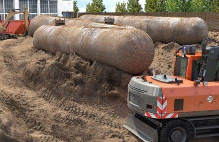
Abb. 16 Erdarbeiten in kontaminierten Bereichen
|
Weitere Informationen
|
- DGUV Information 201-004 "Anlagen zur Atemluftversorgung auf Erdbaumaschinen und Spezialmaschinen des Tiefbaus"
- DGUV Information 201-032 "Gefährdungsbeurteilung für biologische Arbeitsstoffe bei Arbeiten auf Deponien"
- DGUV Information 212-007 "Chemikalienschutzhandschuhe"
- DGUV Information 212-019 "Chemikalienschutzkleidung bei der Sanierung von Altlasten, Deponien und Gebäuden"
- DGUV Information 213-056 "Gaswarneinrichtungen und -geräte für toxische Gase/Dämpfe und Sauerstoff"
- DGUV Information 213-057 "Gaswarneinrichtungen und -geräte für den Explosionsschutz"
- DGUV Information 214-019 "Worauf Sie beim Transport kontaminierter Materialien achten sollten"
- Spezielle Informationen zu Gefahrstoffen in Produkten sind in den Sicherheitsdatenblättern der Hersteller zu finden
- WINGIS-Gefahrstoffinformationssystem der BG BAU unter www.wingis-online.de
- GefKomm-Bau-Gefahrstoffkommunikation in der Lieferkette der Bauwirtschaft unter www.gefkomm-bau.de
|
|
Gefährdungen
|
|
Bei Tiefbauarbeiten in kontaminierten Bereichen können Beschäftigte z. B. durch Boden, Deponiegut, Grund- oder Schichtenwasser mit Gefahr- und Biostoffen in Kontakt kommen.
Gefahr- und Biostoffe können in Form von Gasen, Dämpfen, Stäuben, Aerosolen, Flüssigkeiten etc. auftreten. Sie können durch Einatmen, Verschlucken oder Hautresorption in den menschlichen Körper gelangen. Bei räumlich beengten Verhältnissen können Gefahr- und Biostoffe in erhöhten Konzentrationen auftreten.
Bei Arbeiten in Bereichen, in denen entzündliche Stoffe freigesetzt werden können, z. B. Hausmülldeponien (Methan), durch Kraftstoffe kontaminierte Bereiche wie Raffinerien, Tanklager oder Tankstellen kann zusätzlich eine Brand- und Explosionsgefahr bestehen.
|
|
Maßnahmen
|
|
Um gegenüber den möglichen Gefährdungen Schutzmaßnahmen planen zu können, müssen Vorerkundigungen durchgeführt werden.
Besteht aufgrund der Nutzungsgeschichte eines Standortes der Verdacht, dass im Baufeld Gefahr- oder Biostoffe vorhanden sein können, haben der Auftraggeber oder die Auftraggeberin bzw. die Bauherrin oder der Bauherr eine Erkundung von Art und Konzentration der Stoffe durchzuführen. Überprüfen Sie als Unternehmerin oder Unternehmer, ob
- Ihnen die Ergebnisse dieser Erkundung vorliegen und
- der Auftraggeber oder die Auftraggeberin bzw. die Bauherrin oder der Bauherr beim Vorhandensein von Gefahr- oder Biostoffen einen Arbeits- und Sicherheitsplan erstellt hat.
Fehlen entsprechende Unterlagen, fordern Sie diese von dem Auftraggeber oder der Auftraggeberin bzw. der Bauherrin oder dem Bauherrn ein.
Wesentliche Inhalte des Arbeits- und Sicherheitsplanes (A+S Plan):
- Ergebnisse der Erkundungen;
- Zusammenfassung der stofflichen Eigenschaften der Gefahr- bzw. Biostoffe, inkl. Bewertung von Mobilität und gefährlichen Eigenschaften;
- Beschreibung der auszuführenden Tätigkeiten;
- Beschreibung der von den Gefahr- und Biostoffen ausgehenden Gefährdungen und der zu treffenden Schutzmaßnahmen (dies gilt auch für durchzuführende Erkundungsarbeiten wie Begehungen, Schürfe, Bohrungen, Herstellung von Grundwassermessstellen);
- Angaben zur messtechnischen Überwachung.
Die Schutzmaßnahmen sind in der Ausschreibung des Auftraggebers oder der Auftraggeberin entweder im Einzelnen zu beschreiben oder der Arbeits- und Sicherheitsplan muss Bestandteil der Ausschreibung sein.
Der Plan muss alle Informationen enthalten, die Sie für Ihre Gefährdungsbeurteilung benötigen.
Fehlt diese Grundlage oder sind die Informationen nicht ausreichend, können Sie die Gefährdungsbeurteilung nicht im erforderlichen Maße durchführen und die Arbeiten dürfen nicht begonnen werden.
Der Arbeits- und Sicherheitsplan ist von einer Person zu erstellen, die die Sachkunde nach DGUV Regel 101-004 "Kontaminierte Bereiche" nachweisen kann.
 Die nach der DGUV Regel 101-004 "Kontaminierte Bereiche", Anhang 6 A bzw. 6 B erworbene "Sachkunde für Sicherheit und Gesundheit bei der Arbeit in kontaminierten Bereichen" erfüllt die Fachkundeanforderungen nach Anlage 2 A bzw. 2 B der TRGS 524. Die nach der DGUV Regel 101-004 "Kontaminierte Bereiche", Anhang 6 A bzw. 6 B erworbene "Sachkunde für Sicherheit und Gesundheit bei der Arbeit in kontaminierten Bereichen" erfüllt die Fachkundeanforderungen nach Anlage 2 A bzw. 2 B der TRGS 524.
Sind bei Arbeiten in kontaminierten Bereichen voraussichtlich mehr als ein Unternehmen tätig, muss eine sachkundige und mit Weisungsbefugnissen ausgestattete Person die Tätigkeiten Ihres und weiterer Unternehmen koordinieren. Diese Koordinatorin bzw. dieser Koordinator muss vom Bauherrn bzw. von der Bauherrin bestellt sein.
|
3.1.9 Arbeiten in kontaminierten Bereichen im Tiefbau – Ausführung
Arbeiten in kontaminierten Bereichen liegen dann vor, wenn in einen Baugrund eingegriffen wird, der über eine gesundheitlich unbedenkliche Konzentration hinaus mit Gefahrstoffen oder biologischen Arbeitsstoffen verunreinigt ist. Die in der Planung festgelegten besonderen Schutzmaßnahmen sind bei der Ausführung umzusetzen.
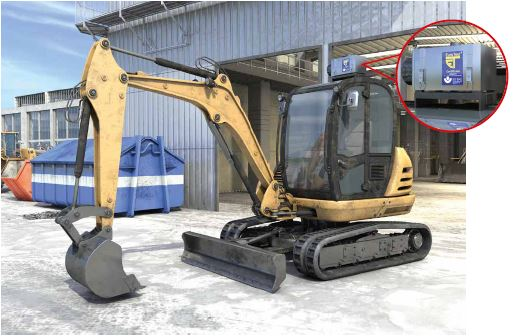
Abb. 17 Bagger mit Schutzbelüftung
|
Weitere Informationen
|
- DGUV Information 201-004 "Anlagen zur Atemluftversorgung auf Erdbaumaschinen und Spezialmaschinen des Tiefbaus"
- DGUV Information 201-032 "Gefährdungsbeurteilung für biologische Arbeitsstoffe bei Arbeiten auf Deponien"
- DGUV Information 212-007 "Chemikalienschutzhandschuhe"
- DGUV Information 212-019 "Chemikalienschutzkleidung bei der Sanierung von Altlasten, Deponien und Gebäuden"
- DGUV Information 214-019 "Worauf Sie beim Transport kontaminierter Materialien achten sollten"
- www.dguv.de: GESTIS-Stoffdatenbank, GESTIS-Biostoffdatenbank
- www.gisbau.de: WINGIS (Gefahrstoffdaten, Erstellung von Betriebsanweisungen)
- www.baua.de Themen von A bis Z
- Spezielle Informationen zu Gefahrstoffen in Produkten sind in den Sicherheitsdatenblättern der Hersteller zu finden
- WINGIS-Gefahrstoffinformationssystem der BG BAU unter www.wingis-online.de
- GefKomm-Bau-Gefahrstoffkommunikation in der Lieferkette der Bauwirtschaft unter www.gefkomm-bau.de
|
|
Gefährdungen
|
|
Bei Tiefbauarbeiten in kontaminierten Bereichen können Beschäftigte z. B. durch Boden, Deponiegut, Grund- oder Schichtenwasser mit Gefahr- und Biostoffen in Kontakt kommen.
Gefahr- und Biostoffe können in Form von Gasen, Dämpfen, Stäuben, Aerosolen, Flüssigkeiten etc. auftreten. Sie können durch Einatmen, Verschlucken oder Hautresorption in den menschlichen Körper gelangen. Bei räumlich beengten Verhältnissen können Gefahr- und Biostoffe in erhöhten Konzentrationen auftreten.
Bei Arbeiten in Bereichen, in denen entzündliche Stoffe freigesetzt werden können, z. B. Hausmülldeponien (Methan) oder durch Kraftstoffe kontaminierte Bereiche wie Raffinerien, Tanklager oder Tankstellen, kann zusätzlich eine Brand- und Explosionsgefahr bestehen.
|
|
Maßnahmen
|
|
Legen Sie als Unternehmerin oder Unternehmer auf Basis der Gefährdungsbeurteilung die erforderlichen Schutzmaßnahmen fest.
Grundlage ist der Arbeits- und Sicherheitsplan (A+S Plan) des Auftraggebers oder der Auftraggeberin bzw. der Bauherrin oder des Bauherrn, der die zur Erstellung der Gefährdungsbeurteilung notwendigen Informationen zu enthalten hat.
Fehlt ein A+S Plan, obwohl der Verdacht (z. B. Nutzungsgeschichte des Standortes, Bodenanalysen) besteht, dass im Baufeld Gefahr- oder Biostoffe vorhanden sein können, liegen Ihnen keine ausreichende Information zur Durchführung Ihrer Gefährdungsbeurteilung vor.
Fragen Sie bei Ihrem Auftraggeber oder Ihrer Auftraggeberin bzw. Ihrer Bauherrin oder Ihrem Bauherrn nach.
Beginnen Sie die Arbeiten erst, wenn Sie einen A+S Plan erhalten, Ihre Gefährdungsbeurteilung durchgeführt und Schutzmaßnahmen festgelegt haben.
- Prüfen Sie, ob die im A+S Plan beschriebenen Maßnahmen für das von Ihnen vorgesehene Arbeitsverfahren anwendbar und zum Schutz der Beschäftigten ausreichend sind.
- Erstellen Sie die stoff- und tätigkeitsbezogenen Betriebsanweisungen.
- Führen Sie die Unterweisungen der Beschäftigten durch, z. B. Handhabung von besonderer PSA wie Atemschutz, Chemikalienschutzkleidung, -schuhe und -handschuhen.
- Stellen Sie sicher, dass Bauleiter bzw. Bauleiterinnen und Aufsichtsführende ausreichende Kenntnisse zu Sicherheit und Gesundheitsschutz bei Arbeiten in kontaminierten Bereichen besitzen.
- Ist Ihr Unternehmen allein tätig, stellen Sie sicher, dass die Arbeiten von einer weisungsbefugten und sachkundigen Person begleitet werden.
Die nach der DGUV Regel 101-004 "Kontaminierte Bereiche" Anhang 6A bzw. 6B erworbene "Sachkunde für Sicherheit und Gesundheit bei der Arbeit in kontaminierten Bereichen" erfüllt die Fachkundeanforderungen nach Anlage 2A bzw. 2B der TRGS 524.
- Halten Sie erforderliche Ausrüstungen wie z. B.:
- besondere Hygieneeinrichtungen,
- Anlagen zur Atemluftversorgung auf Erdbaumaschinen,
- Einrichtungen zur Bewetterung oder Staubminderung,
- Mess- oder Warngeräte zur Überwachung von Gefahrstoffen und auch die Einrichtungen zu ihrer arbeitstäglichen Funktionskontrolle (Prüfstationen, Prüfgase) betriebsbereit vor.
- Unterweisen Sie die mit den Messungen beauftragten Personen im Umgang mit den Geräten.
- Organisieren Sie die sichere Lagerung der PSA, sowie Wartung und Pflege mehrfach verwendbarer PSA, insbesondere von Atemschutzgeräten, Chemikalienschutzkleidung und -handschuhen.
- Informieren Sie bei Arbeiten mit hoher stofflicher Gefährdung, z. B. bei Arbeiten auf Sonderabfalldeponien, die für die Baustelle zuständige Rettungsleitstelle und das nächstgelegene Krankenhaus über die speziellen Gefährdungen.
- Organisieren Sie in Zusammenarbeit mit Ihrer Betriebsärztin bzw. Ihrem Betriebsarzt die für Arbeiten in kontaminierten Bereichen spezielle arbeitsmedizinische Vorsorge.
- Berücksichtigen Sie, dass beim Tragen von "belastender" PSA (z. B. Atemschutz, Chemikalienschutzkleidung) ggf. Tragezeitbegrenzungen eingehalten werden müssen. Berücksichtigen Sie dabei den Einfluss von Umgebungstemperatur, Luftfeuchte und Arbeitsschwere. Arbeiten Sie hierbei mit Ihrer Betriebsärztin bzw. Ihrem Betriebsarzt zusammen. Zeigen Sie die Arbeiten in kontaminierten Bereichen spätestens vier Wochen vor Beginn der für Ihr Unternehmen zuständigen Berufsgenossenschaft oder Unfallkasse schriftlich an.
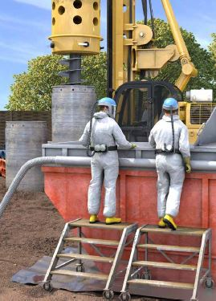
Abb. 18 Persönliche Schutzausrüstungen bei Arbeiten in kontaminierten Bereichen
Werden Kontaminationen angetroffen, die nicht in der Ausschreibung oder im Arbeits- und Sicherheitsplan genannt und in ihren Eigenschaften beschrieben werden, sind die Arbeiten in diesem Bereich unverzüglich einzustellen. Hierüber ist die Bauherrin oder der Bauherr zu informieren. Vor der Weiterarbeit sind Maßnahmen zum Schutz der Beschäftigten zu treffen.
|
3.1.10 Tätigkeiten im Einflussbereich von bestehenden Anlagen, Verkehrsanlagen sowie von Erd- und Freileitungen
Sind im vorgesehenen Arbeitsbereich Anlagen wie z. B. Frei- oder Erdleitungen, Straßen, Gleisanlagen, Wasserstraßen, Schächte oder maschinelle Anlagen und Einrichtungen vorhanden, können von diesen Anlagen Gefahren für die Beschäftigten ausgehen.
Abb. 19 Leitungssuchgeräte
|
Rechtliche Grundlagen
|
- Arbeitsschutzgesetz (ArbSchG), §§ 4, 5, 9
- Betriebssicherheitsverordnung (BetrSichV), §§ 3, 4
- Arbeitsstättenverordnung (ArbStättV), §§ 3, 3 a
- Gefahrstoffverordnung (GefStoffV), §§ 6, 7
- DGUV Vorschrift 3 bzw. 4 "Elektrische Anlagen und Betriebsmittel"
- DGUV Vorschrift 38 "Bauarbeiten", § 6
- DGUV Vorschrift 77 bzw. 78 "Arbeiten im Bereich von Gleisen", §§ 3, 4, 5
- DGUV Regel 101-024 "Sicherungsmaßnahmen bei Arbeiten im Gleisbereich von Eisenbahnen"
- DGUV Regel 101-038 "Bauarbeiten"
- DGUV Regel 100-500 bzw. 100-501 "Betreiben von Arbeitsmitteln"
- Weitere Rechtsvorschriften in Abhängigkeit vom Arbeitsumfeld (z. B. StVO)
|
|
Weitere Informationen
|
- DGUV Information 201-021 "Sicherheitshinweise für Arbeiten im Gleisbereich von Eisenbahnen"
- DGUV Information 203-017 "Schutzmaßnahmen bei Erdarbeiten in der Nähe erdverlegter Kabel und Rohrleitungen"
- DGUV Information 213-056 "Gaswarneinrichtungen und -geräte für toxische Gase/Dämpfe und Sauerstoff"
- DGUV Information 213-057 "Gaswarneinrichtungen und -geräte für den Explosionsschutz"
- Vorgaben der Betreiber/Eigentümer der bestehenden Anlagen, z. B. Richtlinien der Deutschen Bahn AG
|
|
Gefährdungen
|
|
Folgende bestehende Anlagen können unter anderem in Arbeitsbereichen angetroffen werden:
- elektrische Anlagen, z. B. Frei- und Fahrleitungen
- erdverlegte Leitungen, z. B. Kabel, Gas-, Wasser- und Kanalisationsleitungen
- Anlagen mit Explosionsgefahr
- Schächte, Kavernen
- maschinelle Anlagen und Einrichtungen, wie z. B. Kran- und Förderanlagen
- Gleisanlagen
- Straßen
- Wasserstraßen
Hiervon können z. B. folgende Gefährdungen ausgehen:
- Elektrische Gefährdungen, z. B. bei Erdkabel und Freileitungen/Fahrleitungen
- Biologische Gefährdungen, z. B. bei Abwassertechnischen Anlagen
- Brand- und Explosionsgefährdung, z. B. bei Arbeiten an oder in der Nähe von Gasleitungen oder abwassertechnischen Anlagen
- Absturzgefährdungen, z. B. bei Schächten
- Mechanische Gefährdungen, z. B. Anfahren, Quetschen im Bereich maschineller Anlagen und Einrichtungen
- Überfahren im Bereich von Gleisanlagen, Straßen
- Mechanische Gefährdungen durch Kollision mit z. B. Straßen-, Schienen- oder Wasserfahrzeugen
- Gefahr des Ertrinkens im Bereich von Wasserstraßen
|
|
Maßnahmen
|
|
Ermitteln Sie als Unternehmerin oder Unternehmer vor Beginn von Bauarbeiten, ob im vorgesehenen Arbeitsbereich Anlagen vorhanden sind, durch die Personen gefährdet werden können.
Anlagen
Sind Anlagen vorhanden, müssen die erforderlichen Schutz- und Sicherungsmaßnahmen im Einvernehmen mit deren Eigentümern und Eigentümerinnen, Betreibern und gegebenenfalls den zuständigen Behörden festgelegt und durchgeführt werden.
Bei Arbeiten im bzw. am Bereich von Gleisen müssen diese Maßnahmen von der für den Bahnbetrieb zuständigen Stelle (BzS) des Bahnbetreibers festgelegt werden.
Bei erdverlegten Leitungen können Lage und Verlauf durch Rückfrage bei den Leitungsbetreibern (z. B. Gas-, Wasser-, oder Stromversorgungsunternehmen, Bundeswehr, Telekommunikationsunternehmen, Kommunalbetriebe) und durch die Nutzung von Kabelsuchgeräten oder durch Anlegen von Suchgräben ermittelt bzw. bestätigt werden. Schutzmaßnahmen bei erdverlegten Leitungen sind z. B.:
- Kennzeichnen des Leitungsverlaufs vor Beginn der Arbeiten;
- Umlegen gefährdeter Leitungen in Abstimmung mit dem Leitungsbetreiber;
- Befestigen, Unterstützen oder Abfangen freigelegter Leitungen in Abstimmung mit dem Leitungsbetreiber;
- Einhaltung der vom Leitungsbetreiber vorgegebenen Schutzabstände;
- Beachtung der Schutzanweisungen der Leitungsbetreiber.
Betrachten Sie erdverlegte Kabel und Leitungen so lange als unter Spannung stehend, bis vom Betreiber die Spannungsfreiheit ausdrücklich bestätigt wird.
Schutzmaßnahmen bei Arbeiten in der Nähe von elektrischen Frei- oder Fahrleitungen sind z. B.:
- Einhalten von Schutzabständen – auch beim Ausschwingen von Leiterseilen, Lasten, Trag- und Lastaufnahmemitteln sowie bei der Verwendung von Flüssigkeiten, z. B. beim Berieseln von staubenden Flächen. Dies kann z. B. durch Begrenzung des Arbeitsbereichs von Maschinen durch technische Maßnahmen, z. B. Schwenk- oder Hubbegrenzungen erfolgen.
- Kann von Ihnen als Unternehmerin oder Unternehmer ein ausreichender Sicherheitsabstand zu elektrischen Freileitungen und Fahrleitungen nicht eingehalten werden, hat der Auftraggeber bzw. die Auftraggeberin in Abstimmung mit dem Eigentümer bzw. der Eigentümerin oder Betreiber der Leitungen andere Sicherungsmaßnahmen gegen Stromübertritt zu veranlassen. Diese können z. B. sein:
- Abschalten des Stromes;
- Verlegen der Freileitung;
- Verkabelung der Freileitung.
- Stellen Sie Ihren Beschäftigten die Telefonnummern von Rettungsdiensten, Polizei, Feuerwehr, Leitungsbetreibern (Störungsdienste) und zuständigen Behörden, z. B. Tiefbauamt, zur Verfügung. Sorgen Sie für eine geeignete Kommunikationsmöglichkeit.
- Unterweisen Sie Ihre Beschäftigten vor jeder neuen Arbeitsaufgabe, bei Arbeitsaufnahme sowie geänderten Randbedingungen.
Schutzmaßnahmen bei Anlagen mit Explosionsgefahr sind z. B.
- Beachtung des bestehenden Explosionsschutzdokumentes bei der Festlegung von Schutzmaßnahmen in Arbeitsbereichen mit Brand- und Explosionsgefährdungen;
- Einteilung der explosionsgefährdeten Bereiche in Zonen;
- Sicherheitsabstände einhalten;
- Zündquellen fernhalten, Rauchverbot;
- funkenarme, EX-geschützte Arbeitsmittel einsetzen;
- gefährliche explosionsfähige Atmosphäre messtechnisch überwachen.
Schutzmaßnahmen an oder in der Nähe von Kran-, Förder- und anderen Maschinenanlagen sind z. B.:
- Begrenzung der Gefahr bringenden Bewegungen, durch Abschrankung, Warnposten, Signaleinrichtungen.
Schutz- und Sicherungsmaßnahmen bei Straßen, Gleisanlagen und Wasserstraßen müssen im Einvernehmen mit deren Eigentümern und Eigentümerinnen, Betreibern und gegebenenfalls den zuständigen Behörden festgelegt und durchgeführt werden.
Maßnahmen bei unvermutetem Antreffen von bestehenden Anlagen
Werden Anlagen unvermutet angetroffen oder Leitungen beschädigt, sind erforderlichenfalls die Arbeiten sofort zu unterbrechen. Besteht eine Gefährdung, sind Sicherungsmaßnahmen, soweit wie möglich, durchzuführen. Der oder die Aufsichtführende ist zu verständigen.
Sicherungsmaßnahmen sind z. B.:
- Absperren des Gefahrbereiches
- Versicherte und Passanten warnen und fernhalten
- Rauchverbot
Die Arbeiten dürfen nur unter Beachtung der mit den betroffenen Eigentümern und Eigentümerinnen, Betreibern und ggf. den zuständigen Behörden abgestimmten Maßnahmen fortgesetzt werden.

Abb. 20 Schutzabstände zu Freileitungen
|
3.1.11 Tätigkeiten mit dem Risiko des Antreffens von Kampfmitteln
Auch Jahrzehnte nach Ende des 2. Weltkriegs werden im Zuge von Tiefbauarbeiten noch immer Kampfmittel wie z. B. Infanteriemunition, Minen, Spreng- und Brandgranaten sowie Bomben aufgefunden. Auch können chemische Kampfstoffe wie z. B. Senfgas oder Sarin angetroffen werden.
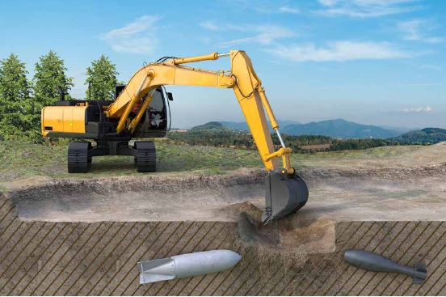
Abb. 21 Kampfmittel im Baugrund
|
Rechtliche Grundlagen
|
- Arbeitsschutzgesetz (ArbSchG), §§ 3,4 und 5
- Sprengstoffgesetz (SprengG), §§ 19,20 und 21
- Bauordnungen der 16 Bundesländer
- Verordnungen, Gesetze, Verwaltungsvorschriften bzw. Merkblätter der 16 Bundesländer zu Kampfmitteln
- Baustellenverordnung (BaustellV), §§ 2 und 3
- Betriebssicherheitsverordnung (BetrSichV), §§ 3, 4 und 10
- Gefahrstoffverordnung (GefStoffV), §§ 6 und 7
- Arbeitsstättenverordnung (ArbStättV)
- DGUV Vorschrift 1 "Grundsätze der Prävention", §§ 2, 3, 4 und 9
- DGUV Vorschrift 38 "Bauarbeiten", § 6
- DGUV Vorschrift 40 "Taucherarbeiten", §§ 8, 15
|
|
Gefährdungen
|
|
Von Kampfmitteln gehen z. B. folgende Gefährdungen aus:
- Splitterflug, Explosionsdruck, Schalldruck, Brand, Selbstentzündung, z. B. bei Kontakt mit Phosphorladungen;
- Vergiftung oder Verätzung durch Gefahrstoffe, z. B. bei Kampf-, Nebel-, Spreng-, Pyrotechnischen Stoffen und Treibsätzen;
- Sekundärgefährdungen aus Beschädigungen insbesondere von Versorgungsleitungen und Bauwerken.
|
|
Maßnahmen
|
|
Gegen diese und weitere mögliche Gefährdungen sind, abhängig von der Gefährdungsbeurteilung, folgende Maßnahmen zu treffen:

Abb. 22 Verhaltensregeln beim Auffinden von Kampfmitteln
Allgemeines
Lassen Sie sich zwingend vor Beginn der Arbeiten eine schriftliche Bestätigung der Kampfmittelfreigabe durch Ihren Auftraggeber bzw. Ihre Auftraggeberin vorlegen. Die Anforderungen an die Bestätigung der Kampfmittelfreigabe unterliegen unterschiedlichen länderspezifischen Anforderungen. Informationen hierzu können Sie bei den örtlich zuständigen Stellen, z. B. den Ordnungsbehörden, erhalten. Eine Zusammenstellung der zuständigen Stellen finden Sie im Merkblatt "Kampfmittelfrei Bauen" bzw. unter www.kampfmittelportal.de.
Berücksichtigen Sie als Unternehmerin oder Unternehmer bei der Gefährdungsbeurteilung die Gefährdung durch Kampfmittel. Stellen Sie die Arbeiten bei nur geringstem Verdacht, dass Kampfmittel gefunden werden könnten, in diesem Bereich ein. Die Arbeiten dürfen erst wieder aufgenommen werden, wenn Ihnen eine schriftliche Kampfmittelfreigabe vorliegt. Dies gilt nicht nur für Bauunternehmen, sondern auch für die vor Ort tätigen Bauherrn, Bauherrinnen, Auftraggeber und Auftraggeberinnen sowie die Architektur-, Ingenieur-, Sachverständigenbüros.
Kampfmittelfreigabe
Nehmen Sie als Unternehmerin oder Unternehmer die Bauarbeiten erst auf, wenn Ihnen eine schriftliche Kampfmittelfreigabe vorliegt:
- Bei einem öffentlichen Bauauftrag eine Bestätigung nach ATV DIN 18299, Abschnitt 0.1.17 VOB/C.
- Bei einem privaten Auftraggeber oder einer privaten Auftraggeberin – wenn die VOB nicht Vertragsgrundlage ist – eine gleichwertige, ordnungsgemäße Freigabe.
Ein Musterformular für eine entsprechende Freigabe mit den erforderlichen Inhalten finden Sie auf www.kampfmittelportal.de
Die Bestätigung der Kampfmittelfreigabe kann nur durch eine autorisierte Fachstelle/-behörde bzw. ein autorisiertes Fachunternehmen – beauftragt durch den Bauherrn oder die Bauherrin – vorgenommen werden, nicht durch private Bauherren, Bauherrinnen, Auftraggeber bzw. Auftraggeberinnen oder Planer bzw. Planerinnen oder Steuerer.
Bezieht sich die Kampfmittelfreigabe lediglich auf einzelne Bereiche innerhalb des Baubereiches (z. B. Pfahlansatzpunkte, Spundwandtrasse, Kanal-/Leitungstrasse), so ist dies im Freigabeprotokoll eindeutig anzugeben. Vor Baubeginn ist die Aktualität/Gültigkeit dieser Teilfreigabe noch einmal verantwortlich zu prüfen!
Enthält die Kampfmittelfreigabe Einschränkungen/Ausschlüsse (z. B. in Bereichen von Auffüllungen oder wenn die erforderliche Sondiertiefe nicht erreicht wurde), gilt die Freigabe zur Bauausführung – zumindest für diese Bereiche – als nicht gegeben. Der Bauherr, die Bauherrin, der Auftraggeber oder die Auftraggeberin muss in diesen Fällen weitere Untersuchungen und Aufklärung veranlassen, so dass eine Freigabe nach ATV DIN 18299 Abschnitt 0.1.17 VOB/C erfolgen kann.
Die Durchführung von jeglichen Erkundungsarbeiten nach Kampfmitteln ist nur speziell geschulten und zugelassenen Fachunternehmen nach § 20 Sprengstoffgesetz gestattet. Dies gilt insbesondere auch für die Ausführung von Sondierungsbohrungen als Hilfsleistung im Rahmen der Kampfmittelerkundung.
Bei Zweifeln an der Richtigkeit/Vollständigkeit der Kampfmittelfreigabe ist anhand der Dokumentation, auf der die Freigabe basiert (z. B. historische Erkundung, Ergebnisse der Sondierung), eine neue Bewertung, erforderlichenfalls durch Sonderfachleute, vorzunehmen.
Unterweisung der Beschäftigten
Nachdem eine Kampfmittelfreigabe vorliegt, müssen Sie als Unternehmerin oder Unternehmer zur Minimierung des immer verbleibenden Restrisikos vor Aufnahme der Bauarbeiten, alle Beschäftigten, die auf der Baustelle tätig werden sollen, bezüglich der von Kampfmitteln ausgehenden Gefahren und der erforderlichen Maßnahmen unterweisen. Diese Unterweisung ist entsprechend zu dokumentieren.
Unvermutetes Antreffen von Kampfmitteln
Treffen Sie als Unternehmerin oder Unternehmer trotz ordnungsgemäßer Freigabe im Zuge der Bauarbeiten Kampfmittel an (Zufallsfund), ist die Arbeit sofort einzustellen, die Baustelle sofort gegen Zutritt zu sichern, dann zu verlassen und die Polizei zu verständigen.
Zusammenarbeit mehrerer Unternehmen
Unternehmerin oder Unternehmer müssen sich gegenseitig und ihre Beschäftigten über die von Kampfmitteln ausgehenden Gefahren unterrichten und Maßnahmen zur Verhütung dieser Gefahren abstimmen.
|
3.1.12 Kampfmittelräumung
Unternehmen, welche Arbeiten zur gezielten Suche nach Kampfmitteln und Räumarbeiten durchführen, benötigen eine Erlaubnis nach dem Sprengstoffgesetz. Hierbei werden an das Personal besondere Anforderungen an Fachkunde und Zuverlässigkeit gestellt. Weiterhin muss die Maschinentechnik für diesen speziellen Einsatz ausgelegt sein.
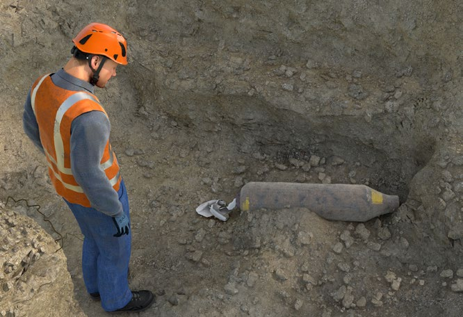
Abb. 23 entschärfte Fliegerbombe
|
Rechtliche Grundlagen
|
- Sprengstoffgesetz (SprengG) §§ 7, 8a und 8b, 9, 14, 19, 20, 21
- Arbeitsschutzgesetz (ArbSchG), §§ 3, 4 und 5
- Betriebssicherheitsverordnung (BetrSichV), §§ 3, 4 und 10
- Baustellenverordnung (BaustellV), §§ 2 und 3
- Gefahrstoffverordnung (GefStoffV), §§ 6 und 7
- Verordnungen, Gesetze, Verwaltungsvorschriften bzw. Merkblätter der 16 Bundesländer zu Kampfmitteln
|
|
Weitere Informationen
|
- DGUV Information 201-027 "Handlungsanleitung zur Gefährdungsbeurteilung und Festlegung von Schutzmaßnahmen bei der Kampfmittelräumung"
- Merkblatt "Kampfmittelfrei Bauen", siehe Internetauftritt unter www.kampfmittelportal.de
- VOB/C ATV DIN 18323
- Arbeitshilfen Kampfmittelräumung (AH KMR) des Bundes
|
|
Gefährdungen
|
- Splitterflug, Explosionsdruck, Schalldruck, Brand, Selbstentzündung, z. B. bei Kontakt mit Phosphorladungen;
- Vergiftung oder Verätzung durch Gefahrstoffe, z. B. bei Kampf-, Nebel-, Spreng-, Pyrotechnischen Stoffen und Treibsätzen;
- Sekundärgefährdungen aus Beschädigungen insbesondere von Versorgungsleitungen und Bauwerken;
- Mangelnde Betriebsorganisation sowie fehlende bzw. unzureichende Fachkenntnisse und Zuverlässigkeit können zu einer Fehleinschätzung der Gefährdungen führen.
|
|
Maßnahmen
|
|
Gegen diese und weitere mögliche Gefährdungen sind, abhängig von der Gefährdungsbeurteilung, folgende Maßnahmen zu treffen:
Allgemeines
An die Unternehmen, welche Kampfmittelräumarbeiten durchführen, werden insbesondere folgende Anforderungen gestellt:
- Erlaubnisschein nach Sprengstoffgesetz
- Prüfung der Zuverlässigkeit durch die zuständige Behörde
- erforderliche Anzahl der Verantwortlichen Personen mit einem behördlichen Befähigungsschein zum Umgang mit Kampfmitteln (Fachkundenachweis durch staatlich oder staatlich anerkannten Lehrgang) bestellen und der zuständigen Behörde melden
- Anzeigepflicht der Räumstelle an zuständige Behörde
Wichtige Unterlagen und Hinweise
Lassen Sie sich vor Beginn der Arbeiten vom Bauherrn bzw. der Bauherrin insbesondere folgende Unterlagen aushändigen:
- die Ergebnisse der historischen Erkundung der Verdachtsfläche mit den daraus ermittelten Gefährdungen
- das Räumkonzept
- den Arbeits- und Sicherheitsplan
- den SiGe-Plan nach Baustellenverordnung der Planungsphase
- evtl. vorhandene Informationen zum zu erwartenden Erhaltungszustand der Munition
Überprüfen Sie die Unterlagen auf Vollständigkeit und Plausibilität und erstellen auf der Basis dieser Unterlagen die Gefährdungsbeurteilung für die Kampfmittelräumung.
Sorgen Sie für:
- Erste Hilfe und Rettungskette
- Maßnahmen zum Schutz unbeteiligter Personen oder angrenzender Gebäude
- geeignete persönliche Schutzausrüstungen für vorhergesehene Maßnahmen vor Ort
- ausreichende Sicherheitsabstände nach den örtlichen Gegebenheiten zwischen den einzelnen Räumpaaren
- den sicheren Transport von Kampfmitteln innerhalb der Räumstelle
Die Übergabe von Kampfmitteln zur Vernichtung oder Entsorgung darf nur an den staatlichen Kampfmittelbeseitigungsdienst bzw. an entsprechend beauftragte Personen oder Unternehmen erfolgen.
Die Auswahl des Räumverfahrens hat unter Berücksichtigung des Standes der Technik zu erfolgen.
Räumverfahren an Land:
- Vollflächige, punktuell bodeneingreifende Kampfmittelräumung
- Räumung von Bombenblindgängern
- Kampfmittelräumung durch den Abtrag von Boden und sonstigen Stoffen (Volumenräumung/Separation)
- Visuelle Kampfmittelräumung
- Baubegleitende Kampfmittelräumung
- Sonstige Räumverfahren – Sicherheitsdetektion für Bohrungen – Abbohren von Flächen
Räumverfahren in Gewässern:
- Vollflächige bodeneingreifende Kampfmittelräumung
- Kampfmittelräumung durch Abtrag des Sediments
- Einzelpunkträumung
Baubegleitende Maßnahmen (sogenannte baubegleitende Kampfmittelräumung) darf nur zur Ausführung kommen, wenn alle anderen Sondier- und Räumverfahren technisch nicht anwendbar sind und begründet ausgeschlossen werden können. Der Abtrag darf nur schichtweise erfolgen. Vor jeder Schicht ist zwingend eine Detektion mit aktiven und passiven Sonden durchzuführen. Sollen Arbeiten bei baubegleitender Kampfmittelräumung durch z. B. Tiefbauunternehmen unterstützt werden, dürfen die Arbeiten ausschließlich unter Regie der vorbeschriebenen qualifizierten und weisungsbefugten "Verantwortlichen Person" erfolgen.
Zusammenarbeit mehrerer Unternehmen
Unternehmerinnen bzw. Unternehmer müssen sich gegenseitig und ihre Beschäftigten über die von Kampfmitteln ausgehenden Gefahren unterrichten und Maßnahmen zur Verhütung dieser Gefahren abstimmen.
Einsatz von Maschinen des Tiefbaus bei der Kampfmittelräumung
Baumaschinen, die bei der gezielten Kampfmittelräumung oder auf Verdachtsflächen mit schwer auswertbaren Sondierergebnissen eingesetzt werden sind mit zusätzlichen Schutzeinrichtungen z. B. Sicherheitssonderverglasung, verstärktem Kabinenboden auszurüsten (siehe DGUV Information 201-027). Die geänderten Maschinen müssen die für sie geltenden Rechtsvorschriften über Sicherheits- und Gesundheitsschutzanforderungen erfüllen. Hierbei ist zu beurteilen, ob es sich um prüfpflichtige Änderungen handelt. Die Betriebssicherheit (z. B. Standsicherheit, Sichtbedingungen) darf durch die Umbauten nicht gefährdet werden.
Sicherheitsbauteile wie ROPS/TOPS/FOPS dürfen bei der Montage nicht beschädigt werden (kein Anbohren, Schweißen).
Unterweisung der Beschäftigten
Vor Aufnahme der Kampfmittelräumarbeiten sind alle Beschäftigten, die auf der Baustelle tätig werden sollen, insbesondere bezüglich der von den zu erwarteten Kampfmitteln ausgehenden Gefährdungen, zu unterweisen. Diese Unterweisung ist entsprechend zu dokumentieren.
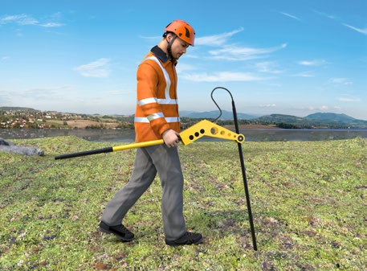
Abb. 24 Kampfmittelsondierarbeiten
|
3.1.13 Tätigkeiten mit elektrischen Gefährdungen
Elektrische Spannungen können eine Gefahr darstellen, da sie bei Kontakt mit dem menschlichen Körper Durchströmungen mit tödlichem Ausgang verursachen können. Im Arbeitsbereich kann eine Gefährdung von elektrischen Freileitungen, erdverlegten Kabeln oder anderen elektrischen Anlagen ausgehen.
|
Gefährdungen
|
|
Elektrische Energie kann durch Körperdurchströmungen und thermische Einwirkungen, z. B. durch Lichtbögen, schwere bis tödliche Verletzungen verursachen.
Diese Gefährdungen können hervorgerufen werden durch
- Beschädigungen von erdverlegten Kabeln bei Erdarbeiten, z. B. durch Erdnägel, Schachtarbeiten, Bohr- und Rammarbeiten;
- Nutzung von Anschlusspunkten mit ungeeigneten oder ohne Fehlerstrom-Schutzeinrichtungen;
- Arbeiten mit ungeeigneten oder beschädigten Arbeitsmitteln;
- Arbeiten mit begrenzter Bewegungsfreiheit in leitfähiger Umgebung, wie z. B. in Gräben, Schächten, Rohrleitungen, Kanälen;
- Unterschreitung von Mindestabständen zu Freileitungen durch Baugeräte und -maschinen;
- ungeeignete mobile Stromerzeuger.

|
Abb. 25
Symbol für gefährliche elektrische Spannung (W008) |
|
Maßnahmen
|
|
Durch folgende Maßnahmen können Sie die elektrischen Gefährdungen minimieren:
Lassen Sie elektrische Leitungen nach Möglichkeit immer freischalten.

|
Abb. 26
Vor Wartung oder Reparatur freischalten (Gebotszeichen M021) |
Erforderliche Sicherungs- und Schutzmaßnahmen, wenn Freischalten nicht möglich ist:
- Schutzabstände (vertikal und horizontal) zur Leitung
- Sicherung der freigelegten Leitung
Stellen Sie Ihren Beschäftigten die Telefonnummern von Rettungsdiensten, Polizei, Feuerwehr, Leitungsbetreibern (Störungsdienste) und zuständigen Behörden, z. B. Tiefbauamt, zur Verfügung. Sorgen Sie für eine geeignete Kommunikationsmöglichkeit.
Unterweisen Sie vor jeder neuen Arbeitsaufgabe, bei Arbeitsaufnahme sowie nach längerer Arbeitsunterbrechung Ihre Beschäftigten.
Anschlusspunkte
Verwenden Sie zum Betrieb Ihrer elektrischen Arbeitsmittel nur geprüfte Anschlusspunkte, die für Steckvorrichtungen
- bis 32 A mit 30 mA Fehlerstrom-Schutzeinrichtungen
und
- über 32 A mit 500 mA Fehlerstrom-Schutzeinrichtungen
ausgerüstet sind.
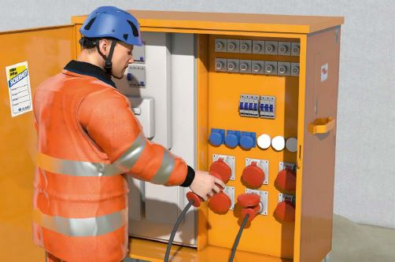
Abb. 27 Verschließbarer Baustromverteiler mit 30 mA und 500 mA Fehlerstrom-Schutzeinrichtungen (RCDs)

Abb. 28
Allstromsensitive Fehlerstrom-Schutzeinrichtung mit den dazugehörigen Symbolen
Alternativ können ortsveränderliche Schutzeinrichtungen mit Schutzleiterüberwachung (PRCD-S) verwendet werden.
Beachten Sie, dass beim Einsatz frequenzgesteuerter Arbeitsmittel, z. B. Krane, Betonsägen, Pumpen, allstromsensitive Fehlerstrom-Schutzeinrichtungen (Typ B) zum Einsatz kommen müssen (gilt seit April 2018 für neue Baustromverteiler und seit April 2020 als Nachrüstverpflichtung für in Betrieb befindliche Baustromverteiler).
Arbeitsmittel
Verwenden Sie nur Arbeitsmittel, die für den gewerblichen Einsatz geeignet sind und der Beanspruchung am Arbeitsplatz genügen.
Verwenden Sie vorzugsweise Handgeräte der Schutzklasse II, welche auch für den rauen Betrieb geeignet sind und erforderlichenfalls einen Nässeschutz aufweisen, erkennbar am Doppelquadrat.

|
Abb. 29
Symbol für doppelte oder verstärkte Isolation (Schutzklasse II) |

|
Abb. 30
Kennzeichnung für Betriebsmittel, welche für den "rauen Betrieb" geeignet sind |

|
Abb. 31
Beispiel für die Kennzeichnung von Schutzarten |
Setzen Sie nur bewegliche Leitungen vom Typ H07RN-F oder H07BQ-F ein (Ausnahme: Bei Geräteanschlussleitungen bis 4 m Länge auch H05RN-F oder H05BQ-F).
Abb. 32 Kennzeichnung von Gummischlauchleitungen
Achten Sie bei Leitungsrollern zusätzlich darauf, dass Tragegriff, Kurbelgriff und Trommel aus Isolierstoff bestehen oder mit Isolierstoff umhüllt sind und mindestens Schutzart IP 44 erfüllen.
Einen sehr guten Schutz gegen elektrische Gefährdungen bieten Akkumaschinen.
Unterweisen Sie Ihre Beschäftigten im Umgang mit den Arbeitsmitteln, z. B. auch über die Kontrolle auf offensichtliche Mängel vor der jeweiligen Verwendung und den Umgang mit Mängeln. Stellen Sie dazu Betriebsanweisungen auf und dokumentieren Sie die Unterweisungen.
Benutzen Sie nur unbeschädigte und durch eine zur Prüfung befähigte Person geprüfte Arbeitsmittel (siehe Kapitel 3.3.12).
Arbeiten mit begrenzter Bewegungsfreiheit in leitfähiger Umgebung
Die elektrische Gefährdung bei Arbeiten mit begrenzter Bewegungsfreiheit in leitfähiger Umgebung, z. B. bei Arbeiten in Kanälen, Rohrleitungen, Bohrungen, ist besonders groß. Verwenden Sie deshalb ausschließlich Trenntransformatoren oder betreiben Sie Ihre Arbeitsmittel mit Schutzkleinspannung.
Für jedes Arbeitsmittel muss ein separater Trenntransformator verwendet werden.
|
3.1.14 Brand- und Explosionsgefährdungen
Eine Brand- und/oder Explosionsgefährdung kann in Arbeitsbereichen vorliegen, in denen brennbare Stoffe vorhanden sind, eingesetzt oder freigesetzt werden. Baustellen, auf denen z. B. Brenn- und Schweißarbeiten ausgeführt werden, Arbeiten im Bereich von Medienleitungen und Läger mit brennbaren Gefahrstoffen sind Arbeitsbereiche mit hoher Brandgefährdung.
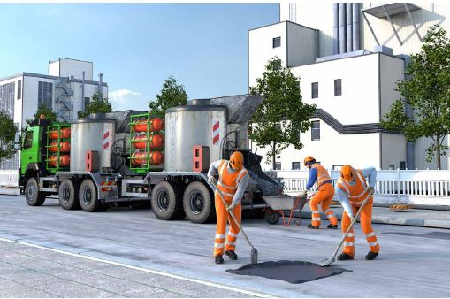
Abb. 34 Arbeiten mit einem gasbetriebenen Asphaltkocher
|
Weitere Informationen
|
- DGUV Information 205-001 "Arbeitssicherheit durch vorbeugenden Brandschutz"
- DGUV Information 205-023 "Brandschutzhelfer, Ausbildung und Befähigung"
- DGUV Information 205-025 "Feuerlöscher richtig einsetzen"
- DGUV Information 213-056 "Gaswarneinrichtungen und -geräte für toxische Gase/Dämpfe und Sauerstoff"
- DGUV Information 213-057 "Gaswarneinrichtungen und -geräte für den Explosionsschutz"
|
|
Gefährdungen
|
|
Eine Brandgefährdung kann in Arbeitsbereichen vorliegen, in denen brennbare Stoffe vorhanden sind. Dazu zählen bauchemische Produkte wie z. B. lösemittelhaltige Farben und Lacke, Klebstoffe, entzündbare Sprays, die brennbare Lösemittel oder Treibgase enthalten. Brennbar sind auch Papier, Holz, Kunststoffe, Metallstäube, Treibstoffe und technische Gase.
Explosionsgefährdungen bestehen, wenn Dämpfe brennbarer Flüssigkeiten/Gase oder brennbare Stäube mit Luft eine gefährliche explosionsfähige Atmosphäre bilden, die entzündet werden kann. Beispiele:
- Ansammlung von entzündbaren Gasen wie Propan, Butan oder brennbaren Lösemitteldämpfen am Boden oder in Hohlräumen;
- durch ungewollte Freisetzung bei der Lagerung und Umfüllung von brennbaren Flüssigkeiten und Gasen;
- Erwärmung von brennbaren Flüssigkeiten.
|
|
Maßnahmen
|
|
Gefährdungsbeurteilung
Stellen Sie in der Gefährdungsbeurteilung fest, ob und in welcher Menge brennbare Stoffe am Arbeitsplatz vorhanden sind oder frei gesetzt werden. Erste Hinweise kann bei gekauften Bauprodukten die Kennzeichnung auf dem Gebinde liefern. Informationen erhalten Sie auch im Sicherheitsdatenblatt von Bauchemikalien. Diese erhalten Sie von Lieferanten oder aus dem Branchenpool. www.gefkomm-bau.de
Hinweise zur Gefährdungsbeurteilung können folgende Fragen liefern:
- Können sich brennbare Lösemitteldämpfe bilden und aufgrund fehlender Lüftung anreichern?
- Werden brennbare Gefahrstoffe wie z. B. entzündbare Gase in Druckgasflaschen vorschriftsmäßig gelagert?
- Ist durch zeitgleich im Arbeitsbereich stattfindende Tätigkeiten eine Koordinierung zur Vermeidung von Brand- und Explosionsgefahren erforderlich?
- Ist ein Explosionsschutzdokument (GefStoffV, § 6) zu erstellen?
Mit dem Gefahrstoffinformationssystem der BG BAU, WINGIS oder WINGIS-online, erstellen Sie eine Betriebsanweisung im Sinne der Gefahrstoffverordnung. Unterweisen Sie ihre Beschäftigten anhand der Betriebsanweisung hinsichtlich Brand- und Explosionsgefährdungen. Dokumentieren Sie die Unterweisung.
Gefahrstoffe
Ersetzen Sie, wenn möglich, brennbare Gefahrstoffe durch nicht brennbare (z. B. Einsatz von lösemittelfreien Produkten).
Zündquellen
Entfernen Sie Zündquellen, wenn Brand- und Explosionsgefahren bestehen. Dazu zählen insbesondere offenes Feuer wie Flammen und Zigaretten, heiße Oberflächen von Verbrennungsmotoren und Heizungen, Schweißspritzer, Funkenflug bei Einsatz von Trennschleifern, Schweißgeräte, elektrostatische Entladung von Personen oder Arbeitsmitteln, Selbstentzündung.
Putzlappen, die mit Fetten und Ölen wie z. B. Holzöle, Leinöl getränkt sind, können sich an der Luft selbstentzünden. Bewahren Sie sie daher nur in verschließbaren nichtbrennbaren Behältern auf.
Arbeitsbereiche, in denen eine gefährliche explosionsfähige Atmosphäre auftreten kann, sind mit dem Warnzeichen "Warnung vor explosionsfähiger Atmosphäre" sowie den Verbotszeichen "Keine offene Flamme; Feuer, offene Zündquelle und Rauchen verboten" und "Zutritt für Unbefugte verboten" zu kennzeichnen.

|
Abb. 35
Warnung vor explosionsfähiger Atmosphäre Warnzeichen D-W021 |

|
Abb. 36
Keine offene Flamme; Feuer, offene Zündquelle und Rauchen verboten; Verbotszeichen P003 |

|
Abb. 37
Zutritt für Unbefugte verboten; Verbotszeichen D-P006 |
Besteht auf einer Baustelle durch vorhandene Materialien/Stoffe eine Brandgefährdung, ist in Abhängigkeit
- der Brandklasse dieser Materialien/Stoffe,
- des Löschvermögens der Feuerlöscher und
- der betroffenen Grundfläche der Arbeitsstätte
die erforderliche Anzahl der Feuerlöscher zu ermitteln.
Feuerlöscher
Werden auf Baustellen Arbeiten mit einer Brandgefährdung durchgeführt, z. B. bei Schweiß-, Brenn- oder Flammarbeiten, ist für jedes der dabei eingesetzten Schweiß-, Brenn- und Flammgeräte ein geeigneter Feuerlöscher für die entsprechenden Brandklassen mit mindestens 6 LE bereitzuhalten. Besteht durch mobile selbstfahrende Arbeitsmittel oder ihre Anhänger oder Ladungen eine Gefährdung durch Brand, müssen sie mit geeigneten Feuerlöschern ausgestattet sein, es sei denn, am Einsatzort sind in ausreichend kurzer Entfernung gleichwertige Feuerlöscher vorhanden.
Stellen Sie sicher, dass die bereitgestellten Feuerlöscher regelmäßig geprüft werden.
Unterweisen Sie Ihre Beschäftigten theoretisch und praktisch im Umgang mit Feuerlöschern. Es empfiehlt sich, diese Unterweisung in Abständen von 3 bis 5 Jahren zu wiederholen.
Brandschutzzeichen
Kennzeichnen Sie die Standorte von Feuerlöschern durch Brandschutzzeichen.
Weitere Informationen zu Bauart und Eignung von Feuerlöschern und Löschmitteleinheiten sind im Baustein A 021 "Brandschutz", Bausteinordner der BG BAU, zu finden.

|
Abb. 38
Brandschutzzeichen F001 Feuerlöscher |
Brenn- und Schweißarbeiten
Einige Auftraggeberinnen oder Auftraggeber verlangen vor Brenn- und Schweißarbeiten eine schriftliche Freigabe.
Lagerung
Lagern Sie Gefahrstoffe nur an dafür geeigneten Orten und in geeigneten Einrichtungen. Bei der Auswahl des Ortes ist darauf zu achten, dass z. B. Flüssiggas nicht unter Erdgleiche oder in der Nähe von Schächten und Einläufen gelagert wird. Beachten Sie auch Zusammenlagerungsverbote und die richtige Lagertemperatur. Weitere Hinweise liefert die TRGS 510 "Lagerung von Gefahrstoffen in ortsbeweglichen Behältern".
Bereiche, in denen brennbare Gefahrstoffe in solchen Mengen gelagert werden, dass eine erhöhte Brandgefährdung besteht, sind mit dem Warnzeichen "Warnung vor feuergefährlichen Stoffen" zu kennzeichnen.

|
Abb. 39
Warnung vor feuergefährlichen Stoffen Warnzeichen W021 |
|
3.1.15 Tätigkeiten mit Lärmbelastung
Lärm ist jeder Schall, der zu einer Beeinträchtigung des Hörvermögens (Hörminderungen oder Gehörschäden) oder zu einer sonstigen mittelbaren oder unmittelbaren Gefährdung von Sicherheit und Gesundheit der Beschäftigten führen kann.
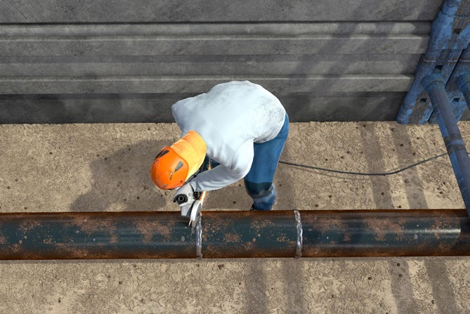
Abb. 40 Persönliche Schutzausrüstungen bei Arbeiten mit dem Winkelschleifer
|
Rechtliche Grundlagen
|
- Lärm- und Vibrations-Arbeitsschutzverordnung (LärmVibrationsArbSchV), §§ 3, 7, 8
- Arbeitsstättenverordnung (ArbStättV), Anhang 1, Nummer 3.7
- Verordnung zur arbeitsmedizinischen Vorsorge (ArbMedVV), Anhang Teil 3
- DGUV Vorschrift 1 "Grundsätze der Prävention", §§ 29, 30, 31
- Technische Regel Lärm (TRLV) Teil Allgemeines, Teile 1–3
- DGUV Regel 100-001 "Grundsätze der Prävention"
- DGUV Regel 112-194 "Benutzung von Gehörschutz"
|
|
Weitere Informationen
|
- DGUV Information 212-024 "Gehörschutz"
- DIN EN ISO 9612 "Akustik – Bestimmung der Lärmexposition am Arbeitsplatz – Verfahren der Genauigkeitsklasse 2"
- Bekanntmachungen zur Betriebssicherheit (BekBS) 1113 "Beschaffung von Arbeitsmitteln"
|
|
Gefährdungen
|
|
Lärm kann bei Ihren Beschäftigten zur Beeinträchtigung des Hörvermögens bis hin zur Schwerhörigkeit führen. Lärmschäden sind irreparabel. Lärmschwerhörigkeit ist bei der BG BAU die am häufigsten angezeigte Berufskrankheit. Sorgen Sie dafür, dass Ihre Beschäftigten vor Lärm geschützt werden.
Bereits ab den unteren Auslösewerten besteht eine mögliche Lärmgefährdung. Potentielle Lärmgefährdungen setzen ein, wenn einer der oberen Auslösewerte aus der Lärm- und Vibrations-Arbeitsschutzverordnung erreicht oder überschritten wird.
"Untere Auslösewerte":
- Tages-Lärmexpositionspegel LEX,8 h = 80 dB (A)
- Spitzenschalldruckpegel LpC,peak = 135 dB (C)
"Obere Auslösewerte bzw. max. zul. Expositionswerte":
- Tages-Lärmexpositionspegel LEX,8 h = 85 dB (A)
- Spitzenschalldruckpegel LpC,peak = 137 dB (C)
Bei Arbeiten auf Baustellen und in Werkstätten können lärmintensive Arbeitsverfahren und Arbeitsmittel sowie auch Nebenarbeitsplätze oder Umgebungslärm Ursachen für Lärmgefährdungen sein.
|
|
Maßnahmen
|
|
Überprüfen Sie im Rahmen der Gefährdungsbeurteilung, ob die Beschäftigten Lärm ausgesetzt sind oder ausgesetzt sein können. Die Lärmbelastung am Arbeitsplatz wird als Tages-Lärmexpositionswert LEX,8 h fachkundig ermittelt und durch den Vergleich mit den unteren und oberen Auslösewerten bewertet. Legen Sie entsprechend dem Ergebnis der Gefährdungsbeurteilung Schutzmaßnahmen nach dem Stand der Technik fest. Technische Maßnahmen sind dabei vorrangig vor organisatorischen und diese wiederum vorrangig vor persönlichen Schutzmaßnahmen zu treffen. Dementsprechend sollten Sie möglichst lärmarme Arbeitsverfahren auswählen und schallreduzierte Arbeitsmittel einsetzen, Lärmbereiche kennzeichnen und geeigneten Gehörschutz zur Verfügung stellen.

|
Abb. 41
Gebotszeichen "Gehörschutz tragen" |
|
Von einer Lärmgefährdung am Arbeitsplatz ist z. B. bei folgenden Tätigkeiten auszugehen:
- Abbrucharbeiten mit Abbau- und Bohrhämmern sowie Baggern mit Meißeleinrichtungen
- Steinbearbeitung, z. B. durch Fugenschneider
- Holzbearbeitung, z. B. durch Baustellenkreissäge
- Metallbearbeitung, z. B. durch Winkelschleifer
- Betonverdichtung mit Rüttelbohlen, z. B. durch Betonfertiger im Straßenbau
- Führen des Spritzkopfes bei Betonspritzarbeiten
- Verbauarbeiten im Kanalbau, z. B. Ein- und Ausbau der Spreizen und Spindeln durch Hammerschläge
- Rammarbeiten, z. B. mit Schlagrammen
- Rohrvortrieb im Schlagverfahren mit Bodendurchschlagraketen
- Arbeiten an und mit Bodenverdichtungsgeräten, z. B. Explosionsstampfer, Rüttelplatten, Vibrationswalzen
Diese Tätigkeiten können in der Regel im Tiefbau nicht durch lärmarme Verfahren bzw. lärmreduzierte Arbeitsmittel ersetzt werden. Stellen Sie deshalb hierfür geeigneten Gehörschutz zur Verfügung und überprüfen Sie dessen Benutzung.
Veranlassen Sie für Ihre Beschäftigten, die in lärmexponierten Bereichen tätig sind, die regelmäßige arbeitsmedizinische Pflichtvorsorge Lärm.
Lärmemission von Arbeitsmitteln
Berücksichtigen Sie bei der Beschaffung von Arbeitsmitteln auch den Schallleistungspegel (LWA), der von den Herstellern in den Betriebsanleitungen und/oder auf den Maschinen angegeben ist.

|
Abb. 42
Kennzeichnung des Schallleistungspegels an einer Maschine |
Der Schallleistungspegel LWA ist die für eine Schallquelle kennzeichnende schalltechnische Größe und ist weder abhängig vom Raum noch vom Abstand. Die Schallleistung beschreibt die Gesamtleistung (tatsächliche Schallenergie), die von einer Schallquelle abgegeben wird. (Nicht identisch mit Tages-Lärmexpositionspegel LEX,8 h = 80 dB (A))
Lärmeinwirkung auf benachbarte Arbeitsplätze
Halten Sie die Lärmeinwirkung auf benachbarte Arbeitsplätze möglichst gering. Ist dies nicht möglich, kann z. B. durch Vergrößern der Abstände zur Lärmquelle oder das Aufstellen von Schallschutzwänden die Lärmeinwirkung auf benachbarte Arbeitsplätze reduziert werden.
Abb. 43 Schallpegelabnahme durch Vergrößerung der Entfernung von der Lärmquelle
Mobile Schallschutzwände reduzieren den Schalldruckpegel um 5-15 dB.
Im Freien ist bei Punktschallquellen (z. B. Einsatz einzelner Werkzeuge) eine Schallpegelabnahme von 6 dB bei einer Abstandsverdopplung anzunehmen.
Die Schallpegelerhöhung von zwei gleich lauten Schallquellen beträgt 3 dB und stellt eine Verdopplung der Lärmexposition dar, obwohl die Erhöhung kaum wahrnehmbar ist. Eine Erhöhung des Schallpegels um 10 dB wird als doppelt so laut empfunden.
Koordinieren Sie möglichst ein zeitlich versetztes Arbeiten, wenn sekundäre Schallschutzmaßnahmen nicht einsetzbar sind.
Vermeidung von Reflexionen
Berücksichtigen Sie bei der Auslegung Ihrer Schallschutzmaßnahmen, dass durch ungewollte Schallreflexionen Schallpegelüberhöhungen von bis zu 8 dB anzunehmen sind.
Unterweisung
Unterweisen Sie die Beschäftigten über ihre Verpflichtung, den zur Verfügung gestellten Gehörschutz zu tragen. Dabei ist auch die bestimmungsgemäße Verwendung zu vermitteln. Dokumentieren Sie diese Unterweisung. Berücksichtigen Sie bei der Festlegung der Schutzmaßnahmen auch die Hinweise des Koordinators bzw. der Koordinatorin sowie des Sicherheits- und Gesundheitsschutzplans (SiGePlan) nach Baustellenverordnung (BaustellV).
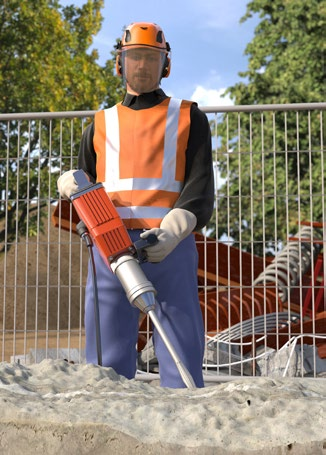
Abb. 44 Persönliche Schutzausrüstungen bei Arbeiten mit dem Stemmhammer
|
3.1.16 Vermeidung körperlicher Fehlbelastung – Ergonomie
Körperliche Belastungen der Beschäftigten können zu Erkrankungen bis hin zur Berufsunfähigkeit führen. Die ergonomische Gestaltung von Arbeitsplätzen und Arbeitsmitteln kann Unfälle verhindern und Belastungen reduzieren.
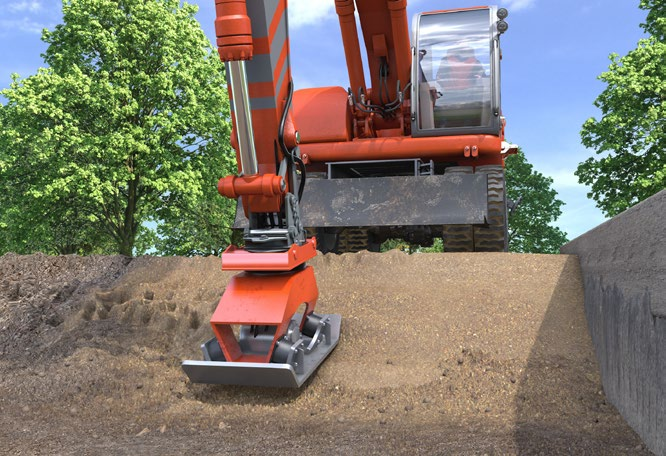
Abb. 45 Reduzierung von körperlichen Belastungen bei Verdichtungsarbeiten durch Einsatz von Anbauverdichtern
|
Weitere Informationen
|
- DGUV Information 206-007 "Gesund und fit im Kleinbetrieb. So geht's mit Ideen-Treffen"
- DGUV Information 206-019 "Rundum gestärkt"
- DGUV Information 208-033 "Belastungen für Rücken und Gelenke – was geht mich das an?"
- Broschüre "Ergonomie am Bau – Damit es leichter geht" der BG BAU
- Broschüre "Ergonomie am Bau – Das kann jeder tun!" der BG BAU
- www.ergonomie-bau.de
|
|
Gefährdungen
|
|
Folgende körperliche Belastungen können zu Gesundheitsschäden der Wirbelsäule, der Gelenke und der Muskulatur führen und somit die Gesundheit der Beschäftigten negativ beeinflussen:
- Heben, Halten und Tragen sowie Ziehen und Schieben von schweren Lasten
- Arbeiten in Zwangshaltungen (bücken, knien, hocken, Arbeiten über Schulterniveau)
- Arbeiten mit gleichförmigen Bewegungsabläufen, insbesondere bei erhöhter Kraftanstrengung (hämmern, drehen, drücken)
- Bewegungsarmut durch lang andauerndes Sitzen bei der Steuerung von Maschinen
- Einwirkungen von Hand-Arm-Vibrationen oder Ganzkörpervibrationen
Zusätzlich können Lärm, Staub, klimatische und psychische Belastungen zu einer Verstärkung der körperlichen Beanspruchung führen.
|
|
Maßnahmen
|
|
Nachfolgende Maßnahmen führen im Allgemeinen zu einer Verringerung der Belastungen und gesundheitlichen Beeinträchtigungen. Wählen Sie Arbeitsverfahren nach ergonomischen Gesichtspunkten aus.
Verdichtungsarbeiten: z. B. Verwenden von B. Maschinen mit Anbaugeräten, ferngesteuerte Maschinen; Pflasterarbeiten und Setzen von Bordsteinen: z. B. Verwenden von Vakuumhebern, Versetzhilfen.
- Setzen Sie bei schweren Lasten möglichst technische Arbeits- und Hilfsmittel für den Materialtransport ein.
z. B. Karren, Transportzangen, Vakuumheber, absenkbare Anhänger, Verladerampen
- Benutzen Sie möglichst erhöhte Ablageflächen für das Lagern und Bearbeiten von Materialien.
- Berücksichtigen Sie bei der Anschaffung von Baumaschinen ergonomische Gesichtspunkte:
z. B. hoher Bedienkomfort bezüglich Sitzeinstellungen, Aufstieg, Sichtverhältnisse, Arbeitsbeleuchtung, Schall- und Vibrationsdämmung, Lenkrad- und Fahrhebelposition, Kabinenklima und Instandhaltung.
Abb. 46 Ergonomisch optimierter Sitz
- Weitere Gesichtspunkte bei der Auswahl von handgeführten Maschinen sollten sein:
z. B. Gewicht, Griffgestaltung, Kraftaufwand bei der Benutzung, Transportierfähigkeit, Handhabung bzw. Praktikabilität, Rechts- und Linkshänderfähigkeit.
- Geben Sie bei Neuanschaffungen möglichst staub-, vibrations- und lärmgeminderten Maschinen, Fahrzeugen und Geräten den Vorzug:
z. B. rückschlagfreie Hämmer, maschinelle Steintrenner.
Arbeitsabläufe
- Organisieren Sie Arbeitsabläufe nach ergonomischen Gesichtspunkten.
Ziel ist die Übereinstimmung der Anforderungen einer Tätigkeit mit den Fähigkeiten und Fertigkeiten des Beschäftigten.
- Vermeiden Sie möglichst lange Transportwege, lassen Sie direkt an den Einbauort liefern.
- Durch regelmäßigen Wechsel der Arbeitshaltungen oder der Arbeitstätigkeiten können die Belastungen reduziert werden.
Verhalten
- Achten Sie darauf, dass bei Bedarf passende persönliche Schutzausrüstungen verwendet werden:
z. B. Knieschutzhosen mit dazugehörigem Einlegepolster, Gehörschutz.
- Weisen Sie Ihre Beschäftigten in neue bzw. geänderte Arbeitsverfahren, Maschinen und Geräte ein und vermitteln Sie, wie diese besonders im Hinblick auf die ergonomisch richtige Körperhaltung anzuwenden bzw. zu verwenden sind.
- Vermitteln Sie Ihren Beschäftigten wirbelsäulengerechte Hebe- und Tragetechniken.
- Ausgleichsübungen können z. B. in Minipausen durchgeführt werden.
- Pflaster- und Steinsetzarbeiten:
- Nach Möglichkeit Maschinen mit Lastaufnahmemitteln (Vakuumheber, Hebezangen) verwenden.
- Lasten nicht höher heben als zur Beförderung notwendig.
- Bei manuellen Arbeiten Gewichte begrenzen (siehe Tabelle 7).
- Orientierungswerte für die Erstellung der Gefährdungsbeurteilung beachten.
Abb. 47 Schwingungsarmer Hammer

Abb. 48 Rückengerechte Hebe- und Tragetechnik

Abb. 49 Ausgleichsübungen
| Empfohlene Grenzwerte |
| Männer (Frauen) |
selten: weniger als 5 % der Schicht
HEBEN |
wiederholt:
5–10 % der Schicht |
häufig:
11–35 % der Schicht |
| 15–18 Jahre |
35 kg (13 kg) |
25 kg (9 kg) |
20 kg (8 kg) |
| 19–45 Jahre |
55 kg (15 kg) |
30 kg (10 kg) |
25 kg (9 kg) |
| über 45 Jahre |
50 kg (13 kg) |
25 kg (9 kg) |
20 kg (8 kg) |
| Männer (Frauen) |
TRAGEN |
|
|
| 15–18 Jahre |
30 kg (13 kg) |
20 kg (9 kg) |
15 kg (8 kg) |
| 19–45 Jahre |
50 kg (15 kg) |
30 kg (10 kg) |
20 kg (10 kg) |
| über 45 Jahre |
40 kg (13 kg) |
25 kg (9 kg) |
15 kg (8 kg) |
Tabelle 7 Empfohlene Grenzwerte für Handlasten (Quelle: VBG)
|
3.1.17 Einflüsse durch psychische Belastung
Auch in der Bauwirtschaft sind die Beschäftigten psychischer Belastung ausgesetzt. Diese kann sich individuell auf die Beschäftigten auswirken.
Abb. 50 Teamarbeit und gute Organisation unterstützen die Abwicklung von Projekten
|
Weitere Informationen
|
- DGUV Information 206-006 "Gesund und fit im Kleinbetrieb Arbeiten: entspannt, gemeinsam, besser"
- DGUV Information 206-007 "So geht’s mit Ideen-Treffen – für Wirtschaft, Verwaltung und Handwerk"
- DGUV Information 206-017 "Gut vorbereitet für den Ernstfall! – Mit traumatischen Ereignissen im Betrieb umgehen"
- BG BAU-Broschüre "Damit es gelassen läuft!"
- www.bgbau.de/themen/sicherheit-und-gesundheit/psychische-belastung
|
|
Gefährdungen
|
|
Psychische Belastung ist zunächst neutral als "die Gesamtheit aller Einflüsse, die von außen auf den Menschen zukommen und psychisch auf ihn einwirken" definiert. Sie kann sich individuell auf die Beschäftigten auswirken und diese positiv (z. B. aktivieren, herausfordern) oder negativ beanspruchen (z. B. Stress verursachen).
Gefährdungen für die Gesundheit der Beschäftigten resultieren aus den Folgen der negativen psychischen Beanspruchung. In diesem Fall wird die Belastung zum Stressfaktor und die Beanspruchung der Person äußert sich als Stressreaktion. Dauerhafter Stress kann psychisch und/oder körperlich die Gesundheit der Beschäftigten beeinträchtigen.
Arbeitsbedingte psychische Belastung mit möglichen negativen Folgen kann z. B. entstehen durch Einflüsse aus
- der Arbeitsaufgabe, z. B. Gefährlichkeit oder Monotonie der Arbeit,
- der Arbeitsorganisation, z. B. Zeitdruck, häufige Arbeitsunterbrechungen,
- der Arbeitsumgebung, z. B. Lärm, Klima,
- den für die Arbeitsaufgabe oder den Bediener bzw. die Bedienerin nicht geeigneten Arbeitsmitteln.
Die Auswirkung der psychischen Belastung ist abhängig von
- Art, Häufigkeit und Intensität der auftretenden Belastung,
- individuellen Leistungsvoraussetzungen (arbeitsplatzbezogen) und Stressbewältigungsstrategien der Person, sowie
- Gegebenheiten im Betrieb im Hinblick auf Sicherheit und Gesundheit bei der Arbeit, Arbeitsgestaltung und -organisation.
|
|
Maßnahmen
|
|
Führen Sie eine Gefährdungsbeurteilung durch, die unternehmensspezifisch die arbeitsbedingte psychische Belastung untersucht.
Es sind vor allem jene Belastungsfaktoren zu berücksichtigen,
die zu gesundheitlichen Beeinträchtigungen der Beschäftigten führen können. Dies dient zur Gesunderhaltung der Beschäftigten und der Verbesserung der Arbeitsbedingungen im Unternehmen.
Bei der Beurteilung potenzieller Gefährdungen durch psychische Belastungen, sowie bei der Ableitung entsprechender Maßnahmen können Sie sich von Fachleuten (z. B. Fachkraft für Arbeitssicherheit, Psychologe bzw. Psychologin oder Betriebsarzt bzw. Betriebsärztin) beraten lassen.
Beispiele für Maßnahmen, die Sie als Unternehmer oder Unternehmerin ergreifen können, um psychische Belastung zu reduzieren, sind:
- Optimierung der Arbeitsorganisation (gute Planung und Zeitmanagement)
- Einhaltung der Erholungspausen
- Fortbildung
Die zu ergreifenden Maßnahmen müssen auf die ermittelte psychische Belastung und die in Ihrem Unternehmen spezifischen Gegebenheiten abgestimmt sein.
Hinweis:
Psychische Beeinträchtigungen können auch durch Beobachten und Miterleben von schwerwiegenden und traumatischen Ereignissen (z. B. von schweren Unfällen, von schweren Verletzungen) entstehen. Informieren Sie Ihre Beschäftigten, dass es Möglichkeiten der psychologischen Erstbetreuung (z. B. durch Unfallversicherungsträger) gibt. Sprechen Sie nach einem Arbeitsunfall die Beschäftigten an, die dabei körperlich unversehrt geblieben sind. Es könnte trotzdem eine psychische Verletzung vorliegen. Informieren Sie über die Möglichkeit, das Ereignis beim Unfallversicherungsträger zu melden und entsprechende Hilfe zu erhalten.
Siehe auch DGUV Grundsatz 306-001 "Traumatische Ereignisse – Prävention und Rehabilitation" und DGUV Information 206-023 "Standards in der betrieblichen psychologischen Erstbetreuung bei traumatischen Ereignissen".
|
3.1.18 Persönliche Schutzausrüstungen (PSA)
Persönliche Schutzausrüstungen (PSA) sind immer dann bereitzustellen und zu benutzen, wenn die technischen und organisatorischen Maßnahmen ausgeschöpft sind und eine Restgefährdung verbleibt, die durch PSA weiter minimiert werden kann. PSA müssen für die jeweiligen Arbeitsbedingungen geeignet sein, den Beschäftigten zur Verfügung stehen und die Kosten für PSA dürfen den Beschäftigten nicht auferlegt werden.
Abb. 51 Warnkleidung Klasse 3 bei erhöhter Gefährdung
|
Gefährdungen
|
|
PSA schützt bei den jeweils auszuführenden Arbeiten vor den Restgefährdungen, welche durch technische oder organisatorische Schutzmaßnahmen nicht ausreichend minimiert werden können. Dies können sein:
- Physikalische Gefährdungen: z. B. Absturz, Schneiden, Splitter- und Funkenflug, Lärm
- Chemische Gefährdungen: z. B. Motorabgase, Schwefelwasserstoff in abwassertechnischen Anlagen
- Biologische Gefährdungen: z. B. Infektionsgefahr bei Arbeiten in abwassertechnischen Anlagen
Bei der Benutzung von persönlichen Schutzausrüstungen können die nachfolgend aufgeführten Gefährdungen bestehen:
- Die PSA ist ungeeignet und schützt nicht vor den Gefährdungen, z. B. Atemschutz gegen Staubbelastungen, wenn die Gefährdungen durch Gase bestehen.
- Es werden mehrere persönliche Schutzausrüstungen verwendet, die nicht auf einander abgestimmt sind; z. B. kann die Funktion von Kapselgehörschützern durch die Bügel von Schutzbrillen stark reduziert sein.
- Die PSA ist verschmutzt und die Schutzfunktion wird beeinträchtigt.
- Die PSA wird über die Gebrauchsdauer hinaus verwendet und die Funktionstüchtigkeit ist nicht mehr erhalten, z. B. der Schutzhelm wird durch Sonneneinstrahlung spröde.
- Die PSA wird verändert, z. B. durch das Aufdrucken von zu großen Beschriftungen auf Warnwesten. Hierdurch kann die Warnfunktion reduziert werden.
- Die PSA funktioniert nicht bestimmungsgemäß, z. B.: Auffanggurte sind nicht auf das Gewicht des Trägers abgestimmt, Schutzhelm ist zu klein.
- Die PSA wird nicht den Herstellerangaben entsprechend verwendet.
|
|
Maßnahmen
|
|
Voraussetzung für die Auswahl von geeigneter PSA ist die Kenntnis aller am Arbeitsplatz auftretenden Gefährdungen. Berücksichtigen Sie hierbei Gefährdungen, die durch eigene bzw. die Tätigkeiten an benachbarten Arbeitsplätzen entstehen können.
Wenn PSA zur Minimierung vieler Gefährdungen gleichzeitig verwendet werden müssen, achten Sie darauf, dass die PSA-Arten aufeinander abgestimmt sind und zusammen verwendet werden dürfen (z. B. Helm mit integrierter Schutzbrille und Kapselgehörschutz).
Achten Sie darauf, dass die Gebrauchseigenschaften der PSA auf die Tätigkeit abgestimmt sind und die Beschäftigten durch die PSA nicht unnötig behindert werden. Für einige PSA sind praktische Übungen vorgeschrieben, z. B. PSA gegen Absturz, Atemschutz, Gehörschutz.
Stellen Sie sicher, dass eine ausreichende Anzahl von persönlichen Schutzausrüstungen für den Zeitraum der Tätigkeit zur Verfügung steht. Bei Einwegschutzkleidung kann nach jeder Arbeitsunterbrechung oder bei jedem Wiedereintritt in den Tätigkeitsbereich neue Einwegschutzkleidung notwendig sein.
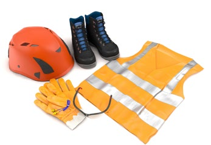
Abb. 52 Auswahl von persönlichen Schutzausrüstungen
Persönliche Schutzausrüstungen sind in regelmäßigen Abständen (mindestens einmal jährlich) durch Sachkundige zu prüfen.
Stellen Sie sicher, dass bei der PSA, welche nach einem Einsatz entsprechend der Herstellerangaben geprüft werden muss, vor einer erneuten Nutzung dieses auch durchgeführt wird.
Hören Sie die Beschäftigten an, bevor Sie PSA zur Verfügung stellen. Die Tragebereitschaft von PSA ist erfahrungsgemäß größer, wenn die Beschäftigten bei der Auswahl der PSA beteiligt werden.
Organisieren Sie Wartungs-, Reparatur- und Ersatzmaßnahmen, sowie eine ordnungsgemäße Lagerung, so dass die PSA während der gesamten Nutzungsdauer gut funktioniert und sich in hygienisch einwandfreiem Zustand befindet.
Beschaffen Sie nur PSA, die mit einer CE-Kennzeichnung versehen ist und auf dem Etikett mit Piktogrammen und Normen versehen ist, die die Eigenschaften der PSA (z. B. Warnkleidung, Schutzkleidung gegen Regen, Chemikalienschutz) symbolisieren. Außerdem muss eine aussagekräftige Herstellerinformation mit den Leistungsstufen der Eigenschaften vorhanden sein. PSA müssen den Beschäftigten individuell passen.

Abb. 53 CE-Kennzeichnung

Abb. 54 Verdichtungsarbeiten mit geeignetem Gehörschutz
|
|